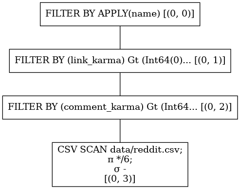
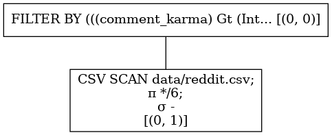
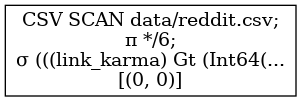
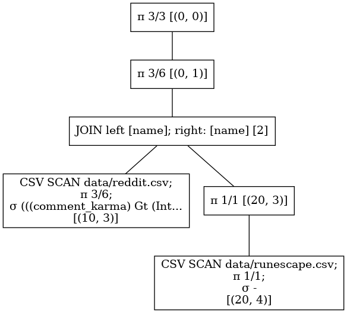

Introduction
This book is an introduction to the
Polars DataFrame library. Its goal is to
explain the inner workings of Polars by going through examples and compare it to other
solutions. Some design choices are here introduced, and the optimal use of Polars
described.
Even though Polars is completely written in Rust (no
runtime overhead!) and uses Arrow -the
native Rust implementation- at its fundation, the
examples presented in this guide will be mostly using its higher-level language
bindings. Those latter are merely a thin wrapper that will not offer more
functionalities than the core library does.
For people used to Pandas, the
Python bindings are the easiest to get started with
Polars, allowing easier experimentation.
Goals and non-goals
The goal of Polars is being a lightning fast DataFrame library that utilizes all
available cores on your machine. Its ideal use case lies in data too big for Pandas
but too small for Spark. If you need to process data
that does not fit in memory of a single machine (even after filtering), Polars is not
the solution to your problem.
Polars consists of an eager API that is similar to Pandas: any operation is
immediately executed and produces a result. In addition, and similarly to Spark,
Polars comes with a query planner (also refered as lazy API) that may -and
probably will- optimize your data processing, decreasing the time spent running the
workload and reducing memory usage.
The lazy API processes an interpretation of your query called a logical plan. This
plan is optimized and reordered before running it. When a result is requested Polars
distributes the available work to different executors that use the algorithm available
in the eager API to come up with the result. Because the whole query context is known to
the optimizer and executors of the logical plan, processes dependent on separate data
sources can be parallelized on the fly.

Current status
Below a concise list of the features allowing Polars to meet its goals:
- Copy-on-write (COW) semantics
- "Free" clones
- Cheap appends
- Appending without clones
- Column oriented data storage
- No block manager (-i.e.- predictable performance)
- Missing values indicated with bitmask
- NaN are different from missing
- Bitmask optimizations
- Efficient algorithms (non-exhaustive list!):
- GroupBy
- Join
- Sort
- Melt
- Explode
- Pivot
- Query optimizations
- Predicate pushdown
- Filtering at scan level
- Projection pushdown
- Projection at scan level
- Simplify expressions
- Parallel execution of physical plan
- Predicate pushdown
- SIMD vectorization
NumPyuniversal functions
In the work
JavaScriptbindings- Memory mapped files
- Out-of-core analysis with
DataFusion
- Out-of-core analysis with
Acknowledgements
Development of Polars is proudly powered by

Getting started
In redaction
See the Python quickstart.
Getting started
Installation
Installing Polars is just a simple pip install away.
$ pip install polars
All binaries are pre-built for Python v3.6+.
Quick start
Below we show a simple snippet that parses a CSV file, filters it, and finishes with a
groupby operation. As mentioned before the eager API must feel very similar to users
familiar to Pandas. The lazy API is more declarative, and describes what one wants
instead of how one wants it.
import polars as pl
Eager quickstart
dataset = pl.read_csv("https://j.mp/iriscsv")
df = dataset[dataset["sepal_length"] > 5].groupby("species").sum()
Lazy quickstart
q = (
pl.scan_csv("iris.csv")
.filter(pl.col("sepal_length") > 5)
.groupby("species")
.agg(pl.col("*").sum())
)
df = q.collect()
In both cases, the snippet will output:
shape: (3, 5)
╭──────────────┬──────────────────┬─────────────────┬──────────────────┬─────────────────╮
│ species ┆ sepal_length_sum ┆ sepal_width_sum ┆ petal_length_sum ┆ petal_width_sum │
│ --- ┆ --- ┆ --- ┆ --- ┆ --- │
│ str ┆ f64 ┆ f64 ┆ f64 ┆ f64 │
╞══════════════╪══════════════════╪═════════════════╪══════════════════╪═════════════════╡
│ "virginica" ┆ 324.5 ┆ 146.2 ┆ 273.1 ┆ 99.6 │
├╌╌╌╌╌╌╌╌╌╌╌╌╌╌┼╌╌╌╌╌╌╌╌╌╌╌╌╌╌╌╌╌╌┼╌╌╌╌╌╌╌╌╌╌╌╌╌╌╌╌╌┼╌╌╌╌╌╌╌╌╌╌╌╌╌╌╌╌╌╌┼╌╌╌╌╌╌╌╌╌╌╌╌╌╌╌╌╌┤
│ "versicolor" ┆ 281.9 ┆ 131.8 ┆ 202.9 ┆ 63.3 │
├╌╌╌╌╌╌╌╌╌╌╌╌╌╌┼╌╌╌╌╌╌╌╌╌╌╌╌╌╌╌╌╌╌┼╌╌╌╌╌╌╌╌╌╌╌╌╌╌╌╌╌┼╌╌╌╌╌╌╌╌╌╌╌╌╌╌╌╌╌╌┼╌╌╌╌╌╌╌╌╌╌╌╌╌╌╌╌╌┤
│ "setosa" ┆ 116.9 ┆ 81.7 ┆ 33.2 ┆ 6.1 │
╰──────────────┴──────────────────┴─────────────────┴──────────────────┴─────────────────╯
As we can see, Polars pretty-prints the output object, including the column name and
datatype as headers.
References
If you want to dive right into the Python API docs, refer to
the index or follow one of the following direct links:
Eager API
The eager API is very similar to Pandas. Operations are
executed directly in an imperative manner. The important data structures are the
DataFrame and the
Series
Lazy API
The lazy API builds a query plan. Nothing is executed until you explicitly ask Polars
to execute the query (via LazyFrame.collect(), or LazyFrame.fetch()). This provides
Polars with the entire context of the query, allowing optimizations and choosing the
fastest algorithm given that context.
The important data structure is here the
LazyFrame, a DataFrame
abstraction lazily keeping track of the query plan.
Arguments given to a LazyFrame can be constructed by building simple to complex
queries following the
Expr API. See the examples in
the How can I? section of the guide.
Polars Expressions
Polars has a powerful concept called expressions. Polars expressions can be used in various context and produce Series. That may sound a bit strange, so lets give an example.
The following is an expression:
col("foo").sort().head(2)
The snippet above says on select column "foo" -> sort -> take first 2 values. The
power of expressions is that every expression produces a new expression and that they
can be piped together. Besides, being very expressive, they are also embarrassingly
parallel!
Expression examples
In the next section we will go through some examples, but first create a dataset:
import polars as pl
from polars import col
import numpy as np
np.random.seed(12)
df = pl.DataFrame(
{
"nrs": [1, 2, 3, None, 5],
"names": ["foo", "ham", "spam", "egg", None],
"random": np.random.rand(5),
"groups": ["A", "A", "B", "C", "B"],
}
)
print(df)
shape: (5, 4)
╭──────┬────────┬────────┬────────╮
│ nrs ┆ names ┆ random ┆ groups │
│ --- ┆ --- ┆ --- ┆ --- │
│ i64 ┆ str ┆ f64 ┆ str │
╞══════╪════════╪════════╪════════╡
│ 1 ┆ "foo" ┆ 0.154 ┆ "A" │
├╌╌╌╌╌╌┼╌╌╌╌╌╌╌╌┼╌╌╌╌╌╌╌╌┼╌╌╌╌╌╌╌╌┤
│ 2 ┆ "ham" ┆ 0.74 ┆ "A" │
├╌╌╌╌╌╌┼╌╌╌╌╌╌╌╌┼╌╌╌╌╌╌╌╌┼╌╌╌╌╌╌╌╌┤
│ 3 ┆ "spam" ┆ 0.263 ┆ "B" │
├╌╌╌╌╌╌┼╌╌╌╌╌╌╌╌┼╌╌╌╌╌╌╌╌┼╌╌╌╌╌╌╌╌┤
│ null ┆ "egg" ┆ 0.534 ┆ "C" │
├╌╌╌╌╌╌┼╌╌╌╌╌╌╌╌┼╌╌╌╌╌╌╌╌┼╌╌╌╌╌╌╌╌┤
│ 5 ┆ null ┆ 0.015 ┆ "B" │
╰──────┴────────┴────────┴────────╯
Some more examples.
You can do a lot with expressions. They are so expressive that you sometimes have got multiple ways to get the same results. To get a feel for them let's go through some examples.
Count unique values
We can count the unique values in a column. Note that we are creating the same result in
a different ways. To not have duplicate column names in the DataFrame, we use an
alias expression, which renames an expression.
df = df[
[
col("names").n_unique().alias("unique_names_1"),
col("names").unique().count().alias("unique_names_2"),
]
]
print(df)
shape: (1, 2)
╭────────────────┬────────────────╮
│ unique_names_1 ┆ unique_names_2 │
│ --- ┆ --- │
│ u32 ┆ u32 │
╞════════════════╪════════════════╡
│ 5 ┆ 5 │
╰────────────────┴────────────────╯
Various aggregations
We can do various aggregations. Below we show some of them, but there are more, such as
median, mean, first etc.
df = df[
[
pl.sum("random").alias("sum"),
pl.min("random").alias("min"),
pl.max("random").alias("max"),
col("random").max().alias("other_max"),
pl.std("random").alias("std dev"),
pl.var("random").alias("variance"),
]
]
print(df)
shape: (1, 6)
╭───────┬───────┬──────┬───────────┬─────────┬──────────╮
│ sum ┆ min ┆ max ┆ other_max ┆ std dev ┆ variance │
│ --- ┆ --- ┆ --- ┆ --- ┆ --- ┆ --- │
│ f64 ┆ f64 ┆ f64 ┆ f64 ┆ f64 ┆ f64 │
╞═══════╪═══════╪══════╪═══════════╪═════════╪══════════╡
│ 1.706 ┆ 0.015 ┆ 0.74 ┆ 0.74 ┆ 0.293 ┆ 0.086 │
╰───────┴───────┴──────┴───────────┴─────────┴──────────╯
Filter and conditionals
We can also do quite some complex things. In the next snippet we count all names ending
with the string "am".
df = df[[col("names").filter(col("names").str_contains(r"am$")).count()]]
print(df)
shape: (1, 1)
╭───────╮
│ names │
│ --- │
│ u32 │
╞═══════╡
│ 2 │
╰───────╯
Binary functions and modification
In the example below we use a conditional to create a new expression in the following
when -> then -> otherwise construct. The when() function requires a predicate
expression (and thus leads to a boolean Series), the then requires expects an
expression that will be used in case the predicate evaluates true, and the otherwise
expects and expression that will be used in case the predicate evaluates false.
Note that you can pass any expression, or just base expressions like col("foo"),
lit(3), lit("bar"), etc.
Finally, we multiply this with result of a sum expression.
df = df[[pl.when(col("random") > 0.5).then(0).otherwise(col("random")) * pl.sum("nrs")]]
print(df)
shape: (5, 1)
╭─────────╮
│ literal │
│ --- │
│ f64 │
╞═════════╡
│ 1.696 │
├╌╌╌╌╌╌╌╌╌┤
│ 0.0 │
├╌╌╌╌╌╌╌╌╌┤
│ 2.896 │
├╌╌╌╌╌╌╌╌╌┤
│ 0.0 │
├╌╌╌╌╌╌╌╌╌┤
│ 0.16 │
╰─────────╯
Window expressions (split-apply-combine)
A polars expression can also do a do an implicit GROUPBY, AGGREGATION, and JOIN in a single expression.
In the examples below we do a GROUPBY OVER "groups" and AGGREGATE SUM of "random", and in the next expression
we GROUPBY OVER "names" and AGGREGATE a LIST of "random". These window functions can be combined with other expressions,
and are an efficient way to determine group statistics. See more of those group statistics here
df = df[
[
col("*"), # select all
col("random").sum().over("groups").alias("sum[random]/groups"),
col("random").list().over("names").alias("random/name"),
]
]
print(df)
shape: (5, 6)
╭──────┬────────┬────────┬────────┬────────────────────┬──────────────────────────╮
│ nrs ┆ names ┆ random ┆ groups ┆ sum[random]/groups ┆ random/name │
│ --- ┆ --- ┆ --- ┆ --- ┆ --- ┆ --- │
│ i64 ┆ str ┆ f64 ┆ str ┆ f64 ┆ list [f64] │
╞══════╪════════╪════════╪════════╪════════════════════╪══════════════════════════╡
│ 1 ┆ "foo" ┆ 0.154 ┆ "A" ┆ 0.894 ┆ "[0.15416284237967237]" │
├╌╌╌╌╌╌┼╌╌╌╌╌╌╌╌┼╌╌╌╌╌╌╌╌┼╌╌╌╌╌╌╌╌┼╌╌╌╌╌╌╌╌╌╌╌╌╌╌╌╌╌╌╌╌┼╌╌╌╌╌╌╌╌╌╌╌╌╌╌╌╌╌╌╌╌╌╌╌╌╌╌┤
│ 2 ┆ "ham" ┆ 0.74 ┆ "A" ┆ 0.894 ┆ "[0.7400496965154048]" │
├╌╌╌╌╌╌┼╌╌╌╌╌╌╌╌┼╌╌╌╌╌╌╌╌┼╌╌╌╌╌╌╌╌┼╌╌╌╌╌╌╌╌╌╌╌╌╌╌╌╌╌╌╌╌┼╌╌╌╌╌╌╌╌╌╌╌╌╌╌╌╌╌╌╌╌╌╌╌╌╌╌┤
│ 3 ┆ "spam" ┆ 0.263 ┆ "B" ┆ 0.278 ┆ "[0.26331501518513467]" │
├╌╌╌╌╌╌┼╌╌╌╌╌╌╌╌┼╌╌╌╌╌╌╌╌┼╌╌╌╌╌╌╌╌┼╌╌╌╌╌╌╌╌╌╌╌╌╌╌╌╌╌╌╌╌┼╌╌╌╌╌╌╌╌╌╌╌╌╌╌╌╌╌╌╌╌╌╌╌╌╌╌┤
│ null ┆ "egg" ┆ 0.534 ┆ "C" ┆ 0.534 ┆ "[0.5337393933802977]" │
├╌╌╌╌╌╌┼╌╌╌╌╌╌╌╌┼╌╌╌╌╌╌╌╌┼╌╌╌╌╌╌╌╌┼╌╌╌╌╌╌╌╌╌╌╌╌╌╌╌╌╌╌╌╌┼╌╌╌╌╌╌╌╌╌╌╌╌╌╌╌╌╌╌╌╌╌╌╌╌╌╌┤
│ 5 ┆ null ┆ 0.015 ┆ "B" ┆ 0.278 ┆ "[0.014574962485419674]" │
╰──────┴────────┴────────┴────────┴────────────────────┴──────────────────────────╯
Conclusion
This is only, a small tip of the possible expressions, there are a ton more, and they can be combined myriad ways.
This page was an introduction to Polars expressions and gave a glimpse of what's possible with them. Next page we see in which contexts we can use expressions. And later we'll go through expressions in various groupby contexts and by doing that keep Polars execution parallel.
Polars Expressions
Polars has a powerful concept called expressions. Polars expressions can be used in various context and produce Series. That may sound a bit strange, so lets give an example.
The following is an expression:
col("foo").sort().head(2)
The snippet above says on select column "foo" -> sort -> take first 2 values. The
power of expressions is that every expression produces a new expression and that they
can be piped together. Besides, being very expressive, they are also embarrassingly
parallel!
Expression examples
In the next section we will go through some examples, but first create a dataset:
import polars as pl
from polars import col
import numpy as np
np.random.seed(12)
df = pl.DataFrame(
{
"nrs": [1, 2, 3, None, 5],
"names": ["foo", "ham", "spam", "egg", None],
"random": np.random.rand(5),
"groups": ["A", "A", "B", "C", "B"],
}
)
print(df)
shape: (5, 4)
╭──────┬────────┬────────┬────────╮
│ nrs ┆ names ┆ random ┆ groups │
│ --- ┆ --- ┆ --- ┆ --- │
│ i64 ┆ str ┆ f64 ┆ str │
╞══════╪════════╪════════╪════════╡
│ 1 ┆ "foo" ┆ 0.154 ┆ "A" │
├╌╌╌╌╌╌┼╌╌╌╌╌╌╌╌┼╌╌╌╌╌╌╌╌┼╌╌╌╌╌╌╌╌┤
│ 2 ┆ "ham" ┆ 0.74 ┆ "A" │
├╌╌╌╌╌╌┼╌╌╌╌╌╌╌╌┼╌╌╌╌╌╌╌╌┼╌╌╌╌╌╌╌╌┤
│ 3 ┆ "spam" ┆ 0.263 ┆ "B" │
├╌╌╌╌╌╌┼╌╌╌╌╌╌╌╌┼╌╌╌╌╌╌╌╌┼╌╌╌╌╌╌╌╌┤
│ null ┆ "egg" ┆ 0.534 ┆ "C" │
├╌╌╌╌╌╌┼╌╌╌╌╌╌╌╌┼╌╌╌╌╌╌╌╌┼╌╌╌╌╌╌╌╌┤
│ 5 ┆ null ┆ 0.015 ┆ "B" │
╰──────┴────────┴────────┴────────╯
Some more examples.
You can do a lot with expressions. They are so expressive that you sometimes have got multiple ways to get the same results. To get a feel for them let's go through some examples.
Count unique values
We can count the unique values in a column. Note that we are creating the same result in
a different ways. To not have duplicate column names in the DataFrame, we use an
alias expression, which renames an expression.
df = df[
[
col("names").n_unique().alias("unique_names_1"),
col("names").unique().count().alias("unique_names_2"),
]
]
print(df)
shape: (1, 2)
╭────────────────┬────────────────╮
│ unique_names_1 ┆ unique_names_2 │
│ --- ┆ --- │
│ u32 ┆ u32 │
╞════════════════╪════════════════╡
│ 5 ┆ 5 │
╰────────────────┴────────────────╯
Various aggregations
We can do various aggregations. Below we show some of them, but there are more, such as
median, mean, first etc.
df = df[
[
pl.sum("random").alias("sum"),
pl.min("random").alias("min"),
pl.max("random").alias("max"),
col("random").max().alias("other_max"),
pl.std("random").alias("std dev"),
pl.var("random").alias("variance"),
]
]
print(df)
shape: (1, 6)
╭───────┬───────┬──────┬───────────┬─────────┬──────────╮
│ sum ┆ min ┆ max ┆ other_max ┆ std dev ┆ variance │
│ --- ┆ --- ┆ --- ┆ --- ┆ --- ┆ --- │
│ f64 ┆ f64 ┆ f64 ┆ f64 ┆ f64 ┆ f64 │
╞═══════╪═══════╪══════╪═══════════╪═════════╪══════════╡
│ 1.706 ┆ 0.015 ┆ 0.74 ┆ 0.74 ┆ 0.293 ┆ 0.086 │
╰───────┴───────┴──────┴───────────┴─────────┴──────────╯
Filter and conditionals
We can also do quite some complex things. In the next snippet we count all names ending
with the string "am".
df = df[[col("names").filter(col("names").str_contains(r"am$")).count()]]
print(df)
shape: (1, 1)
╭───────╮
│ names │
│ --- │
│ u32 │
╞═══════╡
│ 2 │
╰───────╯
Binary functions and modification
In the example below we use a conditional to create a new expression in the following
when -> then -> otherwise construct. The when() function requires a predicate
expression (and thus leads to a boolean Series), the then requires expects an
expression that will be used in case the predicate evaluates true, and the otherwise
expects and expression that will be used in case the predicate evaluates false.
Note that you can pass any expression, or just base expressions like col("foo"),
lit(3), lit("bar"), etc.
Finally, we multiply this with result of a sum expression.
df = df[[pl.when(col("random") > 0.5).then(0).otherwise(col("random")) * pl.sum("nrs")]]
print(df)
shape: (5, 1)
╭─────────╮
│ literal │
│ --- │
│ f64 │
╞═════════╡
│ 1.696 │
├╌╌╌╌╌╌╌╌╌┤
│ 0.0 │
├╌╌╌╌╌╌╌╌╌┤
│ 2.896 │
├╌╌╌╌╌╌╌╌╌┤
│ 0.0 │
├╌╌╌╌╌╌╌╌╌┤
│ 0.16 │
╰─────────╯
Window expressions (split-apply-combine)
A polars expression can also do a do an implicit GROUPBY, AGGREGATION, and JOIN in a single expression.
In the examples below we do a GROUPBY OVER "groups" and AGGREGATE SUM of "random", and in the next expression
we GROUPBY OVER "names" and AGGREGATE a LIST of "random". These window functions can be combined with other expressions,
and are an efficient way to determine group statistics. See more of those group statistics here
df = df[
[
col("*"), # select all
col("random").sum().over("groups").alias("sum[random]/groups"),
col("random").list().over("names").alias("random/name"),
]
]
print(df)
shape: (5, 6)
╭──────┬────────┬────────┬────────┬────────────────────┬──────────────────────────╮
│ nrs ┆ names ┆ random ┆ groups ┆ sum[random]/groups ┆ random/name │
│ --- ┆ --- ┆ --- ┆ --- ┆ --- ┆ --- │
│ i64 ┆ str ┆ f64 ┆ str ┆ f64 ┆ list [f64] │
╞══════╪════════╪════════╪════════╪════════════════════╪══════════════════════════╡
│ 1 ┆ "foo" ┆ 0.154 ┆ "A" ┆ 0.894 ┆ "[0.15416284237967237]" │
├╌╌╌╌╌╌┼╌╌╌╌╌╌╌╌┼╌╌╌╌╌╌╌╌┼╌╌╌╌╌╌╌╌┼╌╌╌╌╌╌╌╌╌╌╌╌╌╌╌╌╌╌╌╌┼╌╌╌╌╌╌╌╌╌╌╌╌╌╌╌╌╌╌╌╌╌╌╌╌╌╌┤
│ 2 ┆ "ham" ┆ 0.74 ┆ "A" ┆ 0.894 ┆ "[0.7400496965154048]" │
├╌╌╌╌╌╌┼╌╌╌╌╌╌╌╌┼╌╌╌╌╌╌╌╌┼╌╌╌╌╌╌╌╌┼╌╌╌╌╌╌╌╌╌╌╌╌╌╌╌╌╌╌╌╌┼╌╌╌╌╌╌╌╌╌╌╌╌╌╌╌╌╌╌╌╌╌╌╌╌╌╌┤
│ 3 ┆ "spam" ┆ 0.263 ┆ "B" ┆ 0.278 ┆ "[0.26331501518513467]" │
├╌╌╌╌╌╌┼╌╌╌╌╌╌╌╌┼╌╌╌╌╌╌╌╌┼╌╌╌╌╌╌╌╌┼╌╌╌╌╌╌╌╌╌╌╌╌╌╌╌╌╌╌╌╌┼╌╌╌╌╌╌╌╌╌╌╌╌╌╌╌╌╌╌╌╌╌╌╌╌╌╌┤
│ null ┆ "egg" ┆ 0.534 ┆ "C" ┆ 0.534 ┆ "[0.5337393933802977]" │
├╌╌╌╌╌╌┼╌╌╌╌╌╌╌╌┼╌╌╌╌╌╌╌╌┼╌╌╌╌╌╌╌╌┼╌╌╌╌╌╌╌╌╌╌╌╌╌╌╌╌╌╌╌╌┼╌╌╌╌╌╌╌╌╌╌╌╌╌╌╌╌╌╌╌╌╌╌╌╌╌╌┤
│ 5 ┆ null ┆ 0.015 ┆ "B" ┆ 0.278 ┆ "[0.014574962485419674]" │
╰──────┴────────┴────────┴────────┴────────────────────┴──────────────────────────╯
Conclusion
This is only, a small tip of the possible expressions, there are a ton more, and they can be combined myriad ways.
This page was an introduction to Polars expressions and gave a glimpse of what's possible with them. Next page we see in which contexts we can use expressions. And later we'll go through expressions in various groupby contexts and by doing that keep Polars execution parallel.
Expression contexts
You cannot use an expression anywhere. An expression needs a context, the available contexts are:
- select
- split-apply-combine
- hstack/ add columns
Syntactic sugar
The reason for such a context, is that you actually are using the Polars lazy API, even if you use it in eager. For instance this snippet:
df.groupby("foo").agg([pl.col("bar").sum()])
actually desugars to:
(df.lazy().groupby("foo").agg([pl.col("bar").sum()])).collect()
This allows Polars to push the expression into the query engine, do optimizations, and cache intermediate results.
Select context
You cannot use an expression everywhere. An expression needs a context from which it can
select the column "foo" to start with.
Select in eager as bracket expressions
df = df[[pl.sum("nrs"), col("names").sort()]]
Select in eager via select
df = df.select([pl.sum("nrs"), pl.col("names").sort()])
Select in lazy via select
df = df.lazy().select([pl.sum("nrs"), col("names").sort()]).collect()
print(df)
shape: (5, 2)
╭─────┬────────╮
│ nrs ┆ names │
│ --- ┆ --- │
│ i64 ┆ str │
╞═════╪════════╡
│ 11 ┆ null │
├╌╌╌╌╌┼╌╌╌╌╌╌╌╌┤
│ 11 ┆ "egg" │
├╌╌╌╌╌┼╌╌╌╌╌╌╌╌┤
│ 11 ┆ "foo" │
├╌╌╌╌╌┼╌╌╌╌╌╌╌╌┤
│ 11 ┆ "ham" │
├╌╌╌╌╌┼╌╌╌╌╌╌╌╌┤
│ 11 ┆ "spam" │
╰─────┴────────╯
Split-apply-combine context
You can use expression during groupby aggregations in lazy as wel as eager:
Lazy aggregation
df = (
df.lazy()
.groupby("groups")
.agg([pl.sum("nrs"), col("random").count().alias("count")])
.collect()
)
Eager aggregation
df = df.groupby("groups").agg([pl.sum("nrs"), col("random").count().alias("count")])
print(df)
shape: (3, 3)
╭────────┬─────────┬───────╮
│ groups ┆ nrs_sum ┆ count │
│ --- ┆ --- ┆ --- │
│ str ┆ i64 ┆ u32 │
╞════════╪═════════╪═══════╡
│ "A" ┆ 3 ┆ 2 │
├╌╌╌╌╌╌╌╌┼╌╌╌╌╌╌╌╌╌┼╌╌╌╌╌╌╌┤
│ "C" ┆ null ┆ 1 │
├╌╌╌╌╌╌╌╌┼╌╌╌╌╌╌╌╌╌┼╌╌╌╌╌╌╌┤
│ "B" ┆ 8 ┆ 2 │
╰────────┴─────────┴───────╯
Add columns context
And finally you can use expression to add column to an existing DataFrame
Lazy add columns
df = (
df.lazy()
.with_columns(
[pl.sum("nrs").alias("nrs_sum"), col("random").count().alias("count")]
)
.collect()
)
Eager aggregation
df = df.with_columns(
[pl.sum("nrs").alias("nrs_sum"), col("random").count().alias("count")]
)
print(df)
shape: (5, 6)
╭──────┬────────┬────────┬────────┬─────────┬───────╮
│ nrs ┆ names ┆ random ┆ groups ┆ nrs_sum ┆ count │
│ --- ┆ --- ┆ --- ┆ --- ┆ --- ┆ --- │
│ i64 ┆ str ┆ f64 ┆ str ┆ i64 ┆ u32 │
╞══════╪════════╪════════╪════════╪═════════╪═══════╡
│ 1 ┆ "foo" ┆ 0.154 ┆ "A" ┆ 11 ┆ 5 │
├╌╌╌╌╌╌┼╌╌╌╌╌╌╌╌┼╌╌╌╌╌╌╌╌┼╌╌╌╌╌╌╌╌┼╌╌╌╌╌╌╌╌╌┼╌╌╌╌╌╌╌┤
│ 2 ┆ "ham" ┆ 0.74 ┆ "A" ┆ 11 ┆ 5 │
├╌╌╌╌╌╌┼╌╌╌╌╌╌╌╌┼╌╌╌╌╌╌╌╌┼╌╌╌╌╌╌╌╌┼╌╌╌╌╌╌╌╌╌┼╌╌╌╌╌╌╌┤
│ 3 ┆ "spam" ┆ 0.263 ┆ "B" ┆ 11 ┆ 5 │
├╌╌╌╌╌╌┼╌╌╌╌╌╌╌╌┼╌╌╌╌╌╌╌╌┼╌╌╌╌╌╌╌╌┼╌╌╌╌╌╌╌╌╌┼╌╌╌╌╌╌╌┤
│ null ┆ "egg" ┆ 0.534 ┆ "C" ┆ 11 ┆ 5 │
├╌╌╌╌╌╌┼╌╌╌╌╌╌╌╌┼╌╌╌╌╌╌╌╌┼╌╌╌╌╌╌╌╌┼╌╌╌╌╌╌╌╌╌┼╌╌╌╌╌╌╌┤
│ 5 ┆ null ┆ 0.015 ┆ "B" ┆ 11 ┆ 5 │
╰──────┴────────┴────────┴────────┴─────────┴───────╯
GroupBy
In redaction
A multithreaded approach
One of the most efficient way to process tabular data is to parallelize its processing
via the "split-apply-combine" approach. This operation is at the core of Polars
grouping implementation, allowing it to attain lightning-fast operations. Most
specifically, both the "split" and "apply" phases are executed in a multithreaded
fashion.
A simple grouping operation is taken below as an example to illustrate this approach:

For the hashing operations performed during the "split" phase, Polars uses a
multithreaded lock-free approach that can is illustrated on the following schema:

This parallelization allows the grouping and joining operations (for instance) to be blazingly fast!
Include content from the blog post
Do not kill the parallelization!
We have all heard that Python is slow, and does "not scale." Besides the overhead of
running "slow" bytecode, Python has to remain within the constraints of the Global
Interpreter Lock (GIL). This means that if one uses a lambda or a custom Python
function to apply during a parallelized phase, Polars speed is capped running Python
code preventing any multiple threads from executing the function.
This all feels terribly limiting, especially because we often need those lambda in a
.groupby() step for instance. This approach is still supported by Polars, but
keeping in mind bytecode AND the GIL price have to be paid.
To mitigate this, Polars implements a powerful syntax defined not only in its lazy,
but also in its eager API.
Polars Expressions
In the introduction on previous page we discussed that using custom Python functions, killed parallelization, and that we can use the expressions of the lazy API to mitigate this. Let's take a look at what that means.
Eager and Lazy
For groupby operations you can use the lazy API in Polars eager. That means that if you run this snippet of code
df.groupby("foo").agg([pl.col("bar").sum()])
It actually desugars to:
(df.lazy().groupby("foo").agg([pl.col("bar").sum()])).collect()
That means you don't have to go to lazy by yourself if you need the more powerful API.
Why would you want this.
As discussed earlier, this allows us to delay the need of grabbing Python lambdas to
do a more complex aggregation. So let's start very simple and see how we can use the DSL
to do increasingly complex queries.
Let's start with a simple dataset US congress dataset.
import polars as pl
from .dataset import dataset
q = (
dataset.lazy()
.groupby("first_name")
.agg([pl.count("party"), pl.col("gender").list(), pl.first("last_name")])
.sort("party_count", reverse=True)
.limit(5)
)
df = q.collect()
Basic aggregations
You can easily combine different aggregations by adding multiple expressions in a
list. There is no upper bound on the number of aggregations you can do, and you can
make any combination you want. In the snippet below we do the following aggregations:
Per GROUP "first_name" we
- count the number of rows in the group:
- short form:
pl.count("party") - full form:
col("party").count()
- short form:
- aggregate the gender values group to a list:
- full form:
col("gender").list()
- full form:
- get the first value of column
"last_name"in the group:- short form:
pl.first("last_name") - full form:
col("last_name").first()
- short form:
Besides the aggregation, we immediately sort the result and limit to the top 5 so that we have a nice summary overview.
import polars as pl
from .dataset import dataset
q = (
dataset.lazy()
.groupby("first_name")
.agg([pl.count("party"), pl.col("gender").list(), pl.first("last_name")])
.sort("party_count", reverse=True)
.limit(5)
)
df = q.collect()
shape: (5, 4)
╭────────────┬─────────────┬─────────────────┬─────────────────╮
│ first_name ┆ party_count ┆ gender_agg_list ┆ last_name_first │
│ --- ┆ --- ┆ --- ┆ --- │
│ cat ┆ u32 ┆ list [str] ┆ str │
╞════════════╪═════════════╪═════════════════╪═════════════════╡
│ "John" ┆ 1254 ┆ "[M, M, ... M]" ┆ "Walker" │
├╌╌╌╌╌╌╌╌╌╌╌╌┼╌╌╌╌╌╌╌╌╌╌╌╌╌┼╌╌╌╌╌╌╌╌╌╌╌╌╌╌╌╌╌┼╌╌╌╌╌╌╌╌╌╌╌╌╌╌╌╌╌┤
│ "William" ┆ 1022 ┆ "[M, M, ... M]" ┆ "Few" │
├╌╌╌╌╌╌╌╌╌╌╌╌┼╌╌╌╌╌╌╌╌╌╌╌╌╌┼╌╌╌╌╌╌╌╌╌╌╌╌╌╌╌╌╌┼╌╌╌╌╌╌╌╌╌╌╌╌╌╌╌╌╌┤
│ "James" ┆ 712 ┆ "[M, M, ... M]" ┆ "Armstrong" │
├╌╌╌╌╌╌╌╌╌╌╌╌┼╌╌╌╌╌╌╌╌╌╌╌╌╌┼╌╌╌╌╌╌╌╌╌╌╌╌╌╌╌╌╌┼╌╌╌╌╌╌╌╌╌╌╌╌╌╌╌╌╌┤
│ "Thomas" ┆ 453 ┆ "[M, M, ... M]" ┆ "Tucker" │
├╌╌╌╌╌╌╌╌╌╌╌╌┼╌╌╌╌╌╌╌╌╌╌╌╌╌┼╌╌╌╌╌╌╌╌╌╌╌╌╌╌╌╌╌┼╌╌╌╌╌╌╌╌╌╌╌╌╌╌╌╌╌┤
│ "Charles" ┆ 439 ┆ "[M, M, ... M]" ┆ "Carroll" │
╰────────────┴─────────────┴─────────────────┴─────────────────╯
Conditionals
Ok, that was pretty easy right. Let turn it up a notch. Let's say we want to know how
many delegates of a "state" are "Pro" or "Anti" administration we could directly query
that in the aggregation without the need of lambda or grooming the DataFrame.
import polars as pl
from .dataset import dataset
q = (
dataset.lazy()
.groupby("state")
.agg(
[
(pl.col("party") == "Anti-Administration").sum().alias("anti"),
(pl.col("party") == "Pro-Administration").sum().alias("pro"),
]
)
.sort("pro", reverse=True)
.limit(5)
)
df = q.collect()
shape: (5, 3)
╭───────┬──────┬─────╮
│ state ┆ anti ┆ pro │
│ --- ┆ --- ┆ --- │
│ cat ┆ u32 ┆ u32 │
╞═══════╪══════╪═════╡
│ "CT" ┆ 0 ┆ 3 │
├╌╌╌╌╌╌╌┼╌╌╌╌╌╌┼╌╌╌╌╌┤
│ "NJ" ┆ 0 ┆ 3 │
├╌╌╌╌╌╌╌┼╌╌╌╌╌╌┼╌╌╌╌╌┤
│ "NC" ┆ 1 ┆ 2 │
├╌╌╌╌╌╌╌┼╌╌╌╌╌╌┼╌╌╌╌╌┤
│ "SC" ┆ 0 ┆ 1 │
├╌╌╌╌╌╌╌┼╌╌╌╌╌╌┼╌╌╌╌╌┤
│ "PA" ┆ 1 ┆ 1 │
╰───────┴──────┴─────╯
Something similar could of course also be done with a nested GROUPBY, but that would not allow me showing these nice features. 😉
import polars as pl
from .dataset import dataset
q = (
dataset.lazy()
.groupby(["state", "party"])
.agg([pl.count("party").alias("count")])
.filter(
(pl.col("party") == "Anti-Administration")
| (pl.col("party") == "Pro-Administration")
)
.sort("count", reverse=True)
.limit(5)
)
df = q.collect()
shape: (5, 3)
╭───────┬───────────────────────┬───────╮
│ state ┆ party ┆ count │
│ --- ┆ --- ┆ --- │
│ cat ┆ cat ┆ u32 │
╞═══════╪═══════════════════════╪═══════╡
│ "CT" ┆ "Pro-Administration" ┆ 3 │
├╌╌╌╌╌╌╌┼╌╌╌╌╌╌╌╌╌╌╌╌╌╌╌╌╌╌╌╌╌╌╌┼╌╌╌╌╌╌╌┤
│ "VA" ┆ "Anti-Administration" ┆ 3 │
├╌╌╌╌╌╌╌┼╌╌╌╌╌╌╌╌╌╌╌╌╌╌╌╌╌╌╌╌╌╌╌┼╌╌╌╌╌╌╌┤
│ "NJ" ┆ "Pro-Administration" ┆ 3 │
├╌╌╌╌╌╌╌┼╌╌╌╌╌╌╌╌╌╌╌╌╌╌╌╌╌╌╌╌╌╌╌┼╌╌╌╌╌╌╌┤
│ "NC" ┆ "Pro-Administration" ┆ 2 │
├╌╌╌╌╌╌╌┼╌╌╌╌╌╌╌╌╌╌╌╌╌╌╌╌╌╌╌╌╌╌╌┼╌╌╌╌╌╌╌┤
│ "VA" ┆ "Pro-Administration" ┆ 1 │
╰───────┴───────────────────────┴───────╯
Filtering
We can also filter the groups. Let's say we want to compute a mean per group, but we
don't want to include all values from that group and we also don't want to filter the
rows from the DataFrame (because we need that rows for another aggregation.)
In the example below we show how that can be done. Note that we can make Python
functions for clarity. These functions don't cost us anything. That is because we only
create Polars expression, we don't apply a custom function over Series during
runtime of the query.
from datetime import datetime
import polars as pl
from .dataset import dataset
def compute_age() -> pl.Expr:
# Date64 is time in ms
ms_to_year = 1e3 * 3600 * 24 * 365
return (
pl.lit(datetime(2021, 1, 1)) - pl.col("birthday").str_parse_date(pl.Date32)
) / (ms_to_year)
def avg_birthday(gender: str) -> pl.Expr:
return (
compute_age()
.filter(pl.col("gender") == gender)
.mean()
.alias(f"avg {gender} birthday")
)
q = (
dataset.lazy()
.groupby(["state"])
.agg(
[
avg_birthday("M"),
avg_birthday("F"),
(pl.col("gender") == "M").sum().alias("# male"),
(pl.col("gender") == "F").sum().alias("# female"),
]
)
.limit(5)
)
df = q.collect()
shape: (5, 5)
╭───────┬────────────────┬────────────────┬────────┬──────────╮
│ state ┆ avg M birthday ┆ avg F birthday ┆ # male ┆ # female │
│ --- ┆ --- ┆ --- ┆ --- ┆ --- │
│ cat ┆ f64 ┆ f64 ┆ u32 ┆ u32 │
╞═══════╪════════════════╪════════════════╪════════╪══════════╡
│ "NY" ┆ 185.85 ┆ 96.438 ┆ 1447 ┆ 20 │
├╌╌╌╌╌╌╌┼╌╌╌╌╌╌╌╌╌╌╌╌╌╌╌╌┼╌╌╌╌╌╌╌╌╌╌╌╌╌╌╌╌┼╌╌╌╌╌╌╌╌┼╌╌╌╌╌╌╌╌╌╌┤
│ "DK" ┆ 190.872 ┆ null ┆ 9 ┆ 0 │
├╌╌╌╌╌╌╌┼╌╌╌╌╌╌╌╌╌╌╌╌╌╌╌╌┼╌╌╌╌╌╌╌╌╌╌╌╌╌╌╌╌┼╌╌╌╌╌╌╌╌┼╌╌╌╌╌╌╌╌╌╌┤
│ "AZ" ┆ 115.061 ┆ 78.03 ┆ 45 ┆ 4 │
├╌╌╌╌╌╌╌┼╌╌╌╌╌╌╌╌╌╌╌╌╌╌╌╌┼╌╌╌╌╌╌╌╌╌╌╌╌╌╌╌╌┼╌╌╌╌╌╌╌╌┼╌╌╌╌╌╌╌╌╌╌┤
│ "TX" ┆ 132.318 ┆ 87.623 ┆ 259 ┆ 4 │
├╌╌╌╌╌╌╌┼╌╌╌╌╌╌╌╌╌╌╌╌╌╌╌╌┼╌╌╌╌╌╌╌╌╌╌╌╌╌╌╌╌┼╌╌╌╌╌╌╌╌┼╌╌╌╌╌╌╌╌╌╌┤
│ "MI" ┆ 150.862 ┆ 84.536 ┆ 289 ┆ 7 │
╰───────┴────────────────┴────────────────┴────────┴──────────╯
Sorting
I often see a DataFrame being sorted for the sole purpose of the ordering during the GROUPBY operation. Let's say that we want to get the names of the oldest and youngest (not that they are still alive) politicians per state, we could SORT and GROUPBY.
import polars as pl
from .dataset import dataset
def get_person() -> pl.Expr:
return pl.col("first_name") + pl.lit(" ") + pl.col("last_name")
q = (
dataset.lazy()
.sort("birthday")
.groupby(["state"])
.agg(
[
get_person().first().alias("youngest"),
get_person().last().alias("oldest"),
]
)
.limit(5)
)
df = q.collect()
shape: (5, 3)
╭───────┬──────────────────┬──────────────────╮
│ state ┆ youngest ┆ oldest │
│ --- ┆ --- ┆ --- │
│ cat ┆ str ┆ str │
╞═══════╪══════════════════╪══════════════════╡
│ "MI" ┆ "Edward Bradley" ┆ "Justin Amash" │
├╌╌╌╌╌╌╌┼╌╌╌╌╌╌╌╌╌╌╌╌╌╌╌╌╌╌┼╌╌╌╌╌╌╌╌╌╌╌╌╌╌╌╌╌╌┤
│ "DK" ┆ "John Todd" ┆ "George Mathews" │
├╌╌╌╌╌╌╌┼╌╌╌╌╌╌╌╌╌╌╌╌╌╌╌╌╌╌┼╌╌╌╌╌╌╌╌╌╌╌╌╌╌╌╌╌╌┤
│ "AR" ┆ "Archibald Yell" ┆ "Tim Griffin" │
├╌╌╌╌╌╌╌┼╌╌╌╌╌╌╌╌╌╌╌╌╌╌╌╌╌╌┼╌╌╌╌╌╌╌╌╌╌╌╌╌╌╌╌╌╌┤
│ "GA" ┆ "Thomas Carnes" ┆ "Kwanza Hall" │
├╌╌╌╌╌╌╌┼╌╌╌╌╌╌╌╌╌╌╌╌╌╌╌╌╌╌┼╌╌╌╌╌╌╌╌╌╌╌╌╌╌╌╌╌╌┤
│ "VT" ┆ "Samuel Shaw" ┆ "Peter Smith" │
╰───────┴──────────────────┴──────────────────╯
However, IF we also want to sort the names alphabetically (and why wouldn't you!), this
breaks. Luckily we can sort in a groupby context separate from the DataFrame.
import polars as pl
from .dataset import dataset
def get_person() -> pl.Expr:
return pl.col("first_name") + pl.lit(" ") + pl.col("last_name")
q = (
dataset.lazy()
.sort("birthday")
.groupby(["state"])
.agg(
[
get_person().first().alias("youngest"),
get_person().last().alias("oldest"),
get_person().sort().first().alias("alphabetical_first"),
]
)
.limit(5)
)
df = q.collect()
shape: (5, 4)
╭───────┬──────────────────┬──────────────────┬────────────────────╮
│ state ┆ youngest ┆ oldest ┆ alphabetical_first │
│ --- ┆ --- ┆ --- ┆ --- │
│ cat ┆ str ┆ str ┆ str │
╞═══════╪══════════════════╪══════════════════╪════════════════════╡
│ "OR" ┆ "George Shiel" ┆ "Greg Walden" ┆ "Abraham Lafferty" │
├╌╌╌╌╌╌╌┼╌╌╌╌╌╌╌╌╌╌╌╌╌╌╌╌╌╌┼╌╌╌╌╌╌╌╌╌╌╌╌╌╌╌╌╌╌┼╌╌╌╌╌╌╌╌╌╌╌╌╌╌╌╌╌╌╌╌┤
│ "KS" ┆ "James Lane" ┆ "Steven Watkins" ┆ "Abel Wilder" │
├╌╌╌╌╌╌╌┼╌╌╌╌╌╌╌╌╌╌╌╌╌╌╌╌╌╌┼╌╌╌╌╌╌╌╌╌╌╌╌╌╌╌╌╌╌┼╌╌╌╌╌╌╌╌╌╌╌╌╌╌╌╌╌╌╌╌┤
│ "SC" ┆ "Ralph Izard" ┆ "Joe Cunningham" ┆ "Abraham Nott" │
├╌╌╌╌╌╌╌┼╌╌╌╌╌╌╌╌╌╌╌╌╌╌╌╌╌╌┼╌╌╌╌╌╌╌╌╌╌╌╌╌╌╌╌╌╌┼╌╌╌╌╌╌╌╌╌╌╌╌╌╌╌╌╌╌╌╌┤
│ "ND" ┆ "Lyman Casey" ┆ "Rick Berg" ┆ "Arthur Link" │
├╌╌╌╌╌╌╌┼╌╌╌╌╌╌╌╌╌╌╌╌╌╌╌╌╌╌┼╌╌╌╌╌╌╌╌╌╌╌╌╌╌╌╌╌╌┼╌╌╌╌╌╌╌╌╌╌╌╌╌╌╌╌╌╌╌╌┤
│ "AR" ┆ "Archibald Yell" ┆ "Tim Griffin" ┆ "Albert Rust" │
╰───────┴──────────────────┴──────────────────┴────────────────────╯
We can even sort by another column in the GROUPBY context. If we want to know if the
alphabetically sorted name is male or female we could add
col("gender").sort_by("first_name").first().alias("gender")
import polars as pl
from .dataset import dataset
def get_person() -> pl.Expr:
return pl.col("first_name") + pl.lit(" ") + pl.col("last_name")
q = (
dataset.lazy()
.sort("birthday")
.groupby(["state"])
.agg(
[
get_person().first().alias("youngest"),
get_person().last().alias("oldest"),
get_person().sort().first().alias("alphabetical_first"),
pl.col("gender").sort_by("first_name").first().alias("gender"),
]
)
.sort("state")
.limit(5)
)
df = q.collect()
shape: (5, 5)
╭───────┬─────────────────────┬──────────────────┬────────────────────┬────────╮
│ state ┆ youngest ┆ oldest ┆ alphabetical_first ┆ gender │
│ --- ┆ --- ┆ --- ┆ --- ┆ --- │
│ cat ┆ str ┆ str ┆ str ┆ cat │
╞═══════╪═════════════════════╪══════════════════╪════════════════════╪════════╡
│ "DE" ┆ "Samuel White" ┆ "John Carney" ┆ "Albert Polk" ┆ "M" │
├╌╌╌╌╌╌╌┼╌╌╌╌╌╌╌╌╌╌╌╌╌╌╌╌╌╌╌╌╌┼╌╌╌╌╌╌╌╌╌╌╌╌╌╌╌╌╌╌┼╌╌╌╌╌╌╌╌╌╌╌╌╌╌╌╌╌╌╌╌┼╌╌╌╌╌╌╌╌┤
│ "VA" ┆ "William Grayson" ┆ "Scott Taylor" ┆ "Abraham Venable" ┆ "M" │
├╌╌╌╌╌╌╌┼╌╌╌╌╌╌╌╌╌╌╌╌╌╌╌╌╌╌╌╌╌┼╌╌╌╌╌╌╌╌╌╌╌╌╌╌╌╌╌╌┼╌╌╌╌╌╌╌╌╌╌╌╌╌╌╌╌╌╌╌╌┼╌╌╌╌╌╌╌╌┤
│ "SC" ┆ "Ralph Izard" ┆ "Joe Cunningham" ┆ "Abraham Nott" ┆ "M" │
├╌╌╌╌╌╌╌┼╌╌╌╌╌╌╌╌╌╌╌╌╌╌╌╌╌╌╌╌╌┼╌╌╌╌╌╌╌╌╌╌╌╌╌╌╌╌╌╌┼╌╌╌╌╌╌╌╌╌╌╌╌╌╌╌╌╌╌╌╌┼╌╌╌╌╌╌╌╌┤
│ "MD" ┆ "Benjamin Contee" ┆ "Frank Kratovil" ┆ "Albert Blakeney" ┆ "M" │
├╌╌╌╌╌╌╌┼╌╌╌╌╌╌╌╌╌╌╌╌╌╌╌╌╌╌╌╌╌┼╌╌╌╌╌╌╌╌╌╌╌╌╌╌╌╌╌╌┼╌╌╌╌╌╌╌╌╌╌╌╌╌╌╌╌╌╌╌╌┼╌╌╌╌╌╌╌╌┤
│ "PA" ┆ "Thomas Fitzsimons" ┆ "Ryan Costello" ┆ "Aaron Kreider" ┆ "M" │
╰───────┴─────────────────────┴──────────────────┴────────────────────┴────────╯
Conclusion
In the examples above we've seen that we can do a lot by combining expressions. By doing so we delay the use of custom python functions that slow down the queries (by the slow nature of Python AND the GIL).
If you think there is a type expression missing, let me know and open a feature request.
Expression API
The full list of possible expressions is available on the Expr
class definition in the reference guide.
Data types
Polars is entirely based on Arrow data types and backed by Arrow memory arrays. This makes data processing
cache-efficient and well-supported for Inter Process Communication. Most data types are follow the exact implementation
from Arrow, with exception of Utf8 (this is actually LargeUtf8), Categorical, and Object (support is limited).
The data types are:
Int8: 8-bit signed integer.Int16: 16-bit signed integer.Int32: 32-bit signed integer.Int64: 64-bit signed integer.UInt8: 8-bit unsigned integer.UInt16: 16-bit unsigned integer.UInt32: 32-bit unsigned integer.UInt64: 64-bit unsigned integer.Boolean: Boolean type effectively bit packed.Utf8: String data (this is actually ArrowLargeUtf8internally).List: A list array contains a child array containing the list values and an offset array. (this is actually ArrowLargeListinternally).Date32: Date representation, internally represented as days since UNIX epoch encoded by a 32-bit signed integer.Date64: Datetime representation, internally represented as milliseconds since UNIX epoch encoded by a 64-bit signed integer.Time64: A 64-bit time representing the elapsed time since midnight in several units.Object: A limited supported data type that can be any value.
To learn more about the internal representation of these data types, check the Arrow columnar format.
Performance
This chapter handles some gotcha's needed to get maximum performance out of Polars. Well used, Polars can run at blazing speeds. Take a look at the results in H2O AI database benchmark.
Strings
Understanding the memory format used by Arrow/Polars can really increase performance
of your queries. This is especially true for large string data. The figure below shows
how an Arrow UTF8 array is laid out in memory.
The array ["foo", "bar", "ham"] is encoded by :
- a concatenated string
"foobarham", - an offset array indicating the start (and end) of each string
[0, 2, 5, 8], - a null bitmap, indicating null values.

This memory structure is very cache-efficient if we are to read the string values.
Especially if we compare it to a Vec<String> (an array of heap allocated string data
in Rust).

However, if we need to reorder the Arrow UTF8 array, we need to swap around all the
bytes of the string values, which can become very expensive when dealing with large
strings. On the other hand, for the Vec<String>, we only need to swap pointers around
which is only 8 bytes data that have to be moved with little cost.
Reordering a DataFrame embedding a large number of Utf8 Series due to an operation
(filtering, joining, grouping, etc.) can quickly become quite expensive.
Categorical type
For this reason Polars has a CategoricalType. A Categorical Series is an array
filled with u32 values that each represent a unique string value. Thereby maintaining
cache efficiency, whilst keeping cheap to move values around.
In the example below we show how you can cast an Utf8 Series column to a
Categorical Series.
import polars as pl
df["utf8-column"].cast(pl.Categorical)
Eager join multiple DataFrames on Categorical data
When two DataFrames need to be joined based on string data the Categorical data needs
to be synchronized (data in column A of df1 needs to point to the same underlying
string data as column B in df2). One can do so by casting data in the StringCache
context manager. This will synchronize all seen string values for the duration of that
context manager. If you want the global string cache to be existent during the whole
run, you can set toggle_string_cache to True.
import polars as pl
df1 = pl.DataFrame({"a": ["foo", "bar", "ham"], "b": [1, 2, 3]})
df2 = pl.DataFrame({"a": ["foo", "spam", "eggs"], "c": [3, 2, 2]})
with pl.StringCache():
df1["a"] = df1["a"].cast(pl.Categorical)
df2["a"] = df2["a"].cast(pl.Categorical)
Lazy join multiple DataFrames on Categorical data
A lazy query always has a global string cache (unless you opt-out) for the duration of
that query (until .collect() is called). The example below shows how you could join
two DataFrames with Categorical types.
import polars as pl
df1 = pl.DataFrame({"a": ["foo", "bar", "ham"], "b": [1, 2, 3]}).lazy()
df2 = pl.DataFrame({"a": ["foo", "spam", "eggs"], "c": [3, 2, 2]}).lazy()
df1 = df1.with_column(pl.col("a").cast(pl.Categorical))
df2 = df2.with_column(pl.col("a").cast(pl.Categorical))
df1.join(df2, on="a", how="inner")
Optimizations
This chapter will investigate some of the optimizations that are applied by the Polars query optimizer by going through some examples and see how Polars modifies the original query plan.
Lazy API
In redaction
To demonstrate the lazy Polars capabilities we suggest to explore two medium-large
datasets of usernames:
Reddit usernames dataset containing 69+ million rows,
import polars as pl
from ..paths import DATA_DIR
dataset = pl.read_csv(f"{DATA_DIR}/reddit.csv", stop_after_n_rows=10)
shape: (5, 6)
╭─────┬────────────────────────────┬─────────────┬────────────┬───────────────┬────────────╮
│ id ┆ name ┆ created_utc ┆ updated_on ┆ comment_karma ┆ link_karma │
│ --- ┆ --- ┆ --- ┆ --- ┆ --- ┆ --- │
│ i64 ┆ str ┆ i64 ┆ i64 ┆ i64 ┆ i64 │
╞═════╪════════════════════════════╪═════════════╪════════════╪═══════════════╪════════════╡
│ 1 ┆ "truman48lamb_jasonbroken" ┆ 1397113470 ┆ 1536527864 ┆ 0 ┆ 0 │
├╌╌╌╌╌┼╌╌╌╌╌╌╌╌╌╌╌╌╌╌╌╌╌╌╌╌╌╌╌╌╌╌╌╌┼╌╌╌╌╌╌╌╌╌╌╌╌╌┼╌╌╌╌╌╌╌╌╌╌╌╌┼╌╌╌╌╌╌╌╌╌╌╌╌╌╌╌┼╌╌╌╌╌╌╌╌╌╌╌╌┤
│ 2 ┆ "johnethen06_jasonbroken" ┆ 1397113483 ┆ 1536527864 ┆ 0 ┆ 0 │
├╌╌╌╌╌┼╌╌╌╌╌╌╌╌╌╌╌╌╌╌╌╌╌╌╌╌╌╌╌╌╌╌╌╌┼╌╌╌╌╌╌╌╌╌╌╌╌╌┼╌╌╌╌╌╌╌╌╌╌╌╌┼╌╌╌╌╌╌╌╌╌╌╌╌╌╌╌┼╌╌╌╌╌╌╌╌╌╌╌╌┤
│ 3 ┆ "yaseinrez_jasonbroken" ┆ 1397113483 ┆ 1536527864 ┆ 0 ┆ 1 │
├╌╌╌╌╌┼╌╌╌╌╌╌╌╌╌╌╌╌╌╌╌╌╌╌╌╌╌╌╌╌╌╌╌╌┼╌╌╌╌╌╌╌╌╌╌╌╌╌┼╌╌╌╌╌╌╌╌╌╌╌╌┼╌╌╌╌╌╌╌╌╌╌╌╌╌╌╌┼╌╌╌╌╌╌╌╌╌╌╌╌┤
│ 4 ┆ "Valve92_jasonbroken" ┆ 1397113503 ┆ 1536527864 ┆ 0 ┆ 0 │
├╌╌╌╌╌┼╌╌╌╌╌╌╌╌╌╌╌╌╌╌╌╌╌╌╌╌╌╌╌╌╌╌╌╌┼╌╌╌╌╌╌╌╌╌╌╌╌╌┼╌╌╌╌╌╌╌╌╌╌╌╌┼╌╌╌╌╌╌╌╌╌╌╌╌╌╌╌┼╌╌╌╌╌╌╌╌╌╌╌╌┤
│ 5 ┆ "srbhuyan_jasonbroken" ┆ 1397113506 ┆ 1536527864 ┆ 0 ┆ 0 │
╰─────┴────────────────────────────┴─────────────┴────────────┴───────────────┴────────────╯
and the Runescape username dataset containing about 55+ million records.
import polars as pl
from ..paths import DATA_DIR
dataset = pl.read_csv(
f"{DATA_DIR}/runescape.csv", has_headers=False, stop_after_n_rows=10
)
shape: (5, 1)
╭───────────────╮
│ column_1 │
│ --- │
│ str │
╞═══════════════╡
│ "a000" │
├╌╌╌╌╌╌╌╌╌╌╌╌╌╌╌┤
│ "a0000" │
├╌╌╌╌╌╌╌╌╌╌╌╌╌╌╌┤
│ "a000000" │
├╌╌╌╌╌╌╌╌╌╌╌╌╌╌╌┤
│ "a0000000" │
├╌╌╌╌╌╌╌╌╌╌╌╌╌╌╌┤
│ "a0000000000" │
╰───────────────╯
Predicate pushdown
In redaction
Predicate pushdown is an optimization Polars does that reduces query times and memory usage. A predicate is database jargon for applying a filter on some table and thereby reducing number the number of rows on that table.
So let's see if we can load some Reddit data and filter on a few predicates.
import polars as pl
from ..paths import DATA_DIR
q = (
pl.scan_csv(f"{DATA_DIR}/reddit.csv")
.filter(pl.col("comment_karma") > 0)
.filter(pl.col("link_karma") > 0)
.filter(pl.col("name").str_contains(r"^a")) # filter name that start with an "a"
)
df1 = q.fetch(int(1e7))
df2 = q.fetch(int(1e7), predicate_pushdown=True)
If we were to run this query above, nothing would happen! This due to the lazyness, nothing will happend until specifically requested. This allows Polars to see the whole context of a query and optimize just in time for execution.
Execution is requested by the .collect method. This would query all available data.
During writing/ optimizing/ checking your query this is often not what you want. Another
method that calls for execution is the .fetch method. .fetch takes a parameter
n_rows and tries to 'fetch' that number of rows at the data source (no guarantees are
given though).
So let's "fetch" ~10 Million rows from the source file and apply the predicates.
reddit.fetch(n_rows=int(1e7))
shape: (656, 6)
╭─────────┬────────────────────┬─────────────┬────────────┬───────────────┬────────────╮
│ id ┆ name ┆ created_utc ┆ updated_on ┆ comment_karma ┆ link_karma │
│ --- ┆ --- ┆ --- ┆ --- ┆ --- ┆ --- │
│ i64 ┆ str ┆ i64 ┆ i64 ┆ i64 ┆ i64 │
╞═════════╪════════════════════╪═════════════╪════════════╪═══════════════╪════════════╡
│ 77860 ┆ "aquarin" ┆ 1137474000 ┆ 1536528294 ┆ 150 ┆ 11 │
├╌╌╌╌╌╌╌╌╌┼╌╌╌╌╌╌╌╌╌╌╌╌╌╌╌╌╌╌╌╌┼╌╌╌╌╌╌╌╌╌╌╌╌╌┼╌╌╌╌╌╌╌╌╌╌╌╌┼╌╌╌╌╌╌╌╌╌╌╌╌╌╌╌┼╌╌╌╌╌╌╌╌╌╌╌╌┤
│ 77974 ┆ "aadvaark" ┆ 1137301200 ┆ 1536528294 ┆ 26 ┆ 47 │
├╌╌╌╌╌╌╌╌╌┼╌╌╌╌╌╌╌╌╌╌╌╌╌╌╌╌╌╌╌╌┼╌╌╌╌╌╌╌╌╌╌╌╌╌┼╌╌╌╌╌╌╌╌╌╌╌╌┼╌╌╌╌╌╌╌╌╌╌╌╌╌╌╌┼╌╌╌╌╌╌╌╌╌╌╌╌┤
│ 78004 ┆ "apoisel" ┆ 1137301200 ┆ 1536497404 ┆ 42 ┆ 2549 │
├╌╌╌╌╌╌╌╌╌┼╌╌╌╌╌╌╌╌╌╌╌╌╌╌╌╌╌╌╌╌┼╌╌╌╌╌╌╌╌╌╌╌╌╌┼╌╌╌╌╌╌╌╌╌╌╌╌┼╌╌╌╌╌╌╌╌╌╌╌╌╌╌╌┼╌╌╌╌╌╌╌╌╌╌╌╌┤
│ 78041 ┆ "aonic" ┆ 1137301200 ┆ 1536497404 ┆ 2931 ┆ 2095 │
├╌╌╌╌╌╌╌╌╌┼╌╌╌╌╌╌╌╌╌╌╌╌╌╌╌╌╌╌╌╌┼╌╌╌╌╌╌╌╌╌╌╌╌╌┼╌╌╌╌╌╌╌╌╌╌╌╌┼╌╌╌╌╌╌╌╌╌╌╌╌╌╌╌┼╌╌╌╌╌╌╌╌╌╌╌╌┤
│ ... ┆ ... ┆ ... ┆ ... ┆ ... ┆ ... │
├╌╌╌╌╌╌╌╌╌┼╌╌╌╌╌╌╌╌╌╌╌╌╌╌╌╌╌╌╌╌┼╌╌╌╌╌╌╌╌╌╌╌╌╌┼╌╌╌╌╌╌╌╌╌╌╌╌┼╌╌╌╌╌╌╌╌╌╌╌╌╌╌╌┼╌╌╌╌╌╌╌╌╌╌╌╌┤
│ 1186942 ┆ "anonymous-coward" ┆ 1162674522 ┆ 1536532928 ┆ 159429 ┆ 31640 │
├╌╌╌╌╌╌╌╌╌┼╌╌╌╌╌╌╌╌╌╌╌╌╌╌╌╌╌╌╌╌┼╌╌╌╌╌╌╌╌╌╌╌╌╌┼╌╌╌╌╌╌╌╌╌╌╌╌┼╌╌╌╌╌╌╌╌╌╌╌╌╌╌╌┼╌╌╌╌╌╌╌╌╌╌╌╌┤
│ 1192656 ┆ "atothedrian" ┆ 1162785880 ┆ 1536497412 ┆ 748 ┆ 585 │
├╌╌╌╌╌╌╌╌╌┼╌╌╌╌╌╌╌╌╌╌╌╌╌╌╌╌╌╌╌╌┼╌╌╌╌╌╌╌╌╌╌╌╌╌┼╌╌╌╌╌╌╌╌╌╌╌╌┼╌╌╌╌╌╌╌╌╌╌╌╌╌╌╌┼╌╌╌╌╌╌╌╌╌╌╌╌┤
│ 1204607 ┆ "akbusiness" ┆ 1162899425 ┆ 1536532995 ┆ 73 ┆ 512 │
├╌╌╌╌╌╌╌╌╌┼╌╌╌╌╌╌╌╌╌╌╌╌╌╌╌╌╌╌╌╌┼╌╌╌╌╌╌╌╌╌╌╌╌╌┼╌╌╌╌╌╌╌╌╌╌╌╌┼╌╌╌╌╌╌╌╌╌╌╌╌╌╌╌┼╌╌╌╌╌╌╌╌╌╌╌╌┤
│ 1214809 ┆ "aaminics" ┆ 1162969322 ┆ 1536533034 ┆ 22 ┆ 6 │
├╌╌╌╌╌╌╌╌╌┼╌╌╌╌╌╌╌╌╌╌╌╌╌╌╌╌╌╌╌╌┼╌╌╌╌╌╌╌╌╌╌╌╌╌┼╌╌╌╌╌╌╌╌╌╌╌╌┼╌╌╌╌╌╌╌╌╌╌╌╌╌╌╌┼╌╌╌╌╌╌╌╌╌╌╌╌┤
│ 1225341 ┆ "antonulrich" ┆ 1163110623 ┆ 1536497412 ┆ 9304 ┆ 1782 │
╰─────────┴────────────────────┴─────────────┴────────────┴───────────────┴────────────╯
Above we see that from the 10 Million rows, 61503 rows match our predicate.
Break it down
In Polars we can visualize the query plan. Let's take a look.
reddit.show_graph(optimized=False)

The astute reader maybe would notice that our query is not very optimal because we have 3 separate FILTER nodes. That means that after every FILTER a new DataFrame is allocated, which will be input to the next FILTER and then deleted from memory, that must be redundant. And you know what.. He/she is right, the predicates should be combined, we should have written this query:
import polars as pl
from ..paths import DATA_DIR
q = pl.scan_csv(f"{DATA_DIR}/reddit.csv").filter(
(pl.col("comment_karma") > 0)
& (pl.col("link_karma") > 0)
& (pl.col("name").str_contains(r"^a"))
)
df = q.fetch(int(1e7))
That would translate to:
reddit_2.show_graph(optimized=False)

As we can see the predicates are combined. This would lead to less copying of data
In comes optimization
Polars tries to save that mental overhead from the query writer and combines predicates for you. Besides that, it pushes predicates down to the scan level! Let's see how our optimized query looks.
reddit.show_graph(optimized=True)

It may be hard to see, but what is clear is that there is only a single node; the CSV SCAN. The predicate filtering is done during the reading of the csv. This means that this query's memory overhead is reduced by filtering factor! This makes a huge impact.
Memory
As we have seen there were ~ 62,000 rows left after the FILTER. That means that (aside for some memory overhead of the batch size and filter operations) we use \( \frac{6.2\text{e-}4}{1\text{e-}7} \sim 0.6 \text{%} \) of the memory we would during an eager evaluation where we first would read the whole table in memory before applying a filter.
Performance
At the time of writing this, the predicate pushdown also increased the query time performance.
Without optimization, predicate_pushdown=False flag:
real 0m2,401s
user 0m5,457s
sys 0m0,894s
with optimization, predicate_pushdown=True flag:
real 0m1,597s
user 0m6,143s
sys 0m0,647s
Relational algebra
In the visualization of the query plan, you see a \( \sigma \) symbol. This indicates a Predicate done at the SCAN level. There is also a \( \pi \) symbol indicating projection (database jargon for column selection), but we'll get to that later.
Cheaper joins
Predicate pushdown optimization will generally also lead to cheaper join's. A join is quite an expensive operation the less rows we through at a join operation, the cheaper it becomes.
Projection pushdown
In redaction
Let's expand our query from the previous section by joining the result of the FILTER operation with the runescape data to see which popular Reddit username that have a username starting with an a also played Runescape. That must be something we are all interested in!
The query that does so may look like this.
import polars as pl
from ..paths import DATA_DIR
reddit = (
pl.scan_csv(f"{DATA_DIR}/reddit.csv")
.filter(pl.col("comment_karma") > 0)
.filter(pl.col("link_karma") > 0)
.filter(pl.col("name").str_contains(r"^a"))
)
runescape = pl.scan_csv("data/runescape.csv", has_headers=False).select(
pl.col("column_1").alias("name")
)
dataset = reddit.join(runescape, on="name", how="inner").select(
["name", "comment_karma", "link_karma"]
)
df1 = dataset.fetch(int(1e7))
df2 = dataset.fetch(int(1e7), predicate_pushdown=True, projection_pushdown=True)
And yields the following DataFrame.
shape: (0, 3)
╭──────┬───────────────┬────────────╮
│ name ┆ comment_karma ┆ link_karma │
│ --- ┆ --- ┆ --- │
│ str ┆ i64 ┆ i64 │
╞══════╪═══════════════╪════════════╡
╰──────┴───────────────┴────────────╯
Break it down
Again, let's take a look the query plan.
dataset.show_graph(optimized=False)

Now were focussed on the projection's indicated with π. The first node shows π 3/6, indicating that we select 3 out of 6 columns in the DataFrame. If we look the csv scans we see a wildcard π */6 and π */1 meaning that we select all of 6 columns of the reddit dataset and the one and only column from the runescape dataset respectively.
This query is not very optimal. We select all columns from both datasets and only show 3/6 after join. That means that there were some columns computed during the join operation that could have been ignored. There were also columns parsed during csv scanning only to be dropped at the end. When we are dealing with DataFrame's with a large number of columns the redundant work that is done can be huge.
Optimized query
Let's see how Polars optimizes this query.
dataset.show_graph(optimized=True)

The projections are pushed down the join operation all the way to the csv scans. This means that both the scanning and join operation have become cheaper due to the query optimization.
Performance
Let's time the result before and after optimization.
without optimization, predicate_pushdown=False and projection_pushdown=False.
real 0m3,273s
user 0m9,284s
sys 0m1,081s
with optimization, predicate_pushdown and projection_pushdown flags both to
True.
real 0m1,732s
user 0m7,581s
sys 0m0,783s
We can see that we almost reduced query time by half on this simple query. With real business data often comprising of many column, filtering missing data, doing complex groupby and joins we expect this difference between unoptimized queries and optimized queries to only grow.
Other optimizations
In redaction
Besides predicate and projection pushdown, Polars does other optimizations.
One important one is optional caching and parallelization. One can imagine having two different DataFrame computations that lead to a scan of the same file. Polars may cache the scanned file to prevent scanning the same file twice. However, if you want to, you may override this behavior and force polars to read the same file. This could be faster because the scan could be done in parallel.
Join parallelization
If we look at the previous query, we see that the join operation has as input a
computation path with data/reddit.csv as root and one path with data/runescape.csv
as root. Polars can observe that there are no dependencies between the two DataFrame and
will read both files in parallel. If other operations are done before the join (e.g.
groupby, filters, etc.) they are also executed in parallel.

Simplify expressions
Some other optimizations that are done are expression simplifications. The impact of these optimizations is less than that of predicate and projection pushdown, but they likely add up. You can track this issue to see the latest status of those.
How can I?
This chapter contains some snippets examples that will get you up to speed with the most
idiomatic way to get things done in Polars.
Check also the
10 minutes to Polars notebook.
IO
Polars support different file types and its respective parsers are amongst the fastest out there.
For instance, it is faster to load a CSV file via Polars before handing it Pandas,
than directly using Pandas. (Just run a
pl.read_csv("<FILE>", rechunk=False).to_pandas() to convince yourself.)
Character-Separated Values
Read & Write
Reading a CSV file should look familiar:
df = pl.read_csv("path.csv")
CSV files come in many different flavors, so make sure to check the
read_csv() API.
Writing to a CSV file can be done with the
to_csv() method.
df = pl.DataFrame({"foo": [1, 2, 3], "bar": [None, "bak", "baz"]})
df.to_csv("path.csv")
Scan
Polars allows to scan a CSV input. Scanning delays the actual parsing of the file,
and returns instead a lazy computation holder called a LazyFrame.
df = pl.scan_csv("path.csv")
If you want to know why you would want this (and you do!)
read about the optimizations run under the hood of
Polars.
Parquet
Loading or writing Parquet files is as fast as can be.
Pandas uses PyArrow -Python bindings
exposed by Arrow- to load Parquet files into memory but has to copy that data into
Pandas own memory. With Polars one does not have to pay the extra price due to
copying as we read Parquet directly into Arrow memory and keep it there.
Read & write
df = pl.read_parquet("path.parquet")
df = pl.DataFrame({"foo": [1, 2, 3], "bar": [None, "bak", "baz"]})
df.to_parquet("path.parquet")
Scan
Polars allows to scan a Parquet input. Scanning delays the actual parsing of the
file, and returns instead a lazy computation holder called a LazyFrame.
df = pl.scan_parquet("path.parquet")
If you want to know why you would want this (and you do!)
read about the optimizations run under the hood of
Polars.
Interact with AWS
In redaction
To read from or write to an AWS bucket, additional dependencies are needed:
$ pip install s3fs
In the next few snippets, we take the example of interacting with a Parquet file
located on an AWS bucket.
Read
On can load a .parquet file using:
import polars as pl
import pyarrow.parquet as pq
import s3fs
fs = s3fs.S3FileSystem()
bucket = "<YOUR_BUCKET>"
path = "<YOUR_PATH>"
dataset = pq.ParquetDataset(f"s3://{bucket}/{path}", filesystem=fs)
df = pl.from_arrow(dataset.read())
Write
Interoperability
Arrow
Arrow is rapidly becoming the de facto standard for columnar data. This means that
support for Arrow is growing rapidly, in languages and in tools. Due to the great
effort that is being put in the format, using Arrow is now likely the fastest way to:
- Read en write
Parquetformatted files. - Read CSV into columnar data.
- Exchanging columnar data.
Polars uses Arrow memory buffer as the most basic building block for Polars
Series. This means that we exchange data between Polars and Arrow without
copying it. It also means that where Arrow performs well, Polars does.
One can convert a Polars DataFrame or Series to Arrow using the .to_arrow()
method. Similarly, importing from Arrow data structure can be performed with the
.from_arrow() functions.
NumPy
Polars Series have support for NumPy
universal functions (ufuncs).
Element-wise function such as np.exp(), np.cos(), np.div(), etc. all work with
almost zero overhead.
A Polars-specific remark however: missing values are a separate bitmask and are not
visible by NumPy. It can yield to a window function or a np.convolve() giving
flawed/incomplete results.
One can convert a Polars Series to a NumPy array with the .to_numpy() method.
Missing values will be replaced by np.nan during the conversion. If the Series does
not include missing values, or those values are not desired anymore, the .view()
method can be used instead, providing a zero-copy NumPy array of the data.
Data handling
Process strings
Thanks to its Arrow backend Polars string operations are much faster compared to the
same operations performed with NumPy or Pandas. In the latter, strings are stored as
Python objects and while traversing the np.array or the pd.Series the CPU needs to
follow all the string pointers, and jump through many different memory locations; which
is, as expected, quite computationally expensive. In Polars (e.g., Arrow data
structure) strings are contiguous in memory and traversing is cache-optimal and
predictable for the CPU.
The string processing functions available in Polars are:
.str_parse_date().str_contains().str_lengths().str_replace().str_replace_all().str_to_lowercase().str_to_uppercase()
A few examples below. To compute string lengths:
import polars as pl
dataset = pl.DataFrame({"shakespeare": "All that glitters is not gold".split(" ")})
df = (
dataset.lazy()
.with_column(pl.col("shakespeare").str_lengths().alias("letter_count"))
.collect()
)
returning:
shape: (6, 2)
╭─────────────┬──────────────╮
│ shakespeare ┆ letter_count │
│ --- ┆ --- │
│ str ┆ u32 │
╞═════════════╪══════════════╡
│ "All" ┆ 3 │
├╌╌╌╌╌╌╌╌╌╌╌╌╌┼╌╌╌╌╌╌╌╌╌╌╌╌╌╌┤
│ "that" ┆ 4 │
├╌╌╌╌╌╌╌╌╌╌╌╌╌┼╌╌╌╌╌╌╌╌╌╌╌╌╌╌┤
│ "glitters" ┆ 8 │
├╌╌╌╌╌╌╌╌╌╌╌╌╌┼╌╌╌╌╌╌╌╌╌╌╌╌╌╌┤
│ "is" ┆ 2 │
├╌╌╌╌╌╌╌╌╌╌╌╌╌┼╌╌╌╌╌╌╌╌╌╌╌╌╌╌┤
│ "not" ┆ 3 │
├╌╌╌╌╌╌╌╌╌╌╌╌╌┼╌╌╌╌╌╌╌╌╌╌╌╌╌╌┤
│ "gold" ┆ 4 │
╰─────────────┴──────────────╯
And below a regex pattern to filter out articles (the, a, and, etc.) from a
sentence:
import polars as pl
dataset = pl.DataFrame({"a": "The man that ate a whole cake".split(" ")})
df = (
dataset.lazy().filter(pl.col("a").str_contains(r"(?i)^the$|^a$").is_not()).collect()
)
yielding:
shape: (5, 1)
╭─────────╮
│ a │
│ --- │
│ str │
╞═════════╡
│ "man" │
├╌╌╌╌╌╌╌╌╌┤
│ "that" │
├╌╌╌╌╌╌╌╌╌┤
│ "ate" │
├╌╌╌╌╌╌╌╌╌┤
│ "whole" │
├╌╌╌╌╌╌╌╌╌┤
│ "cake" │
╰─────────╯
Timestamp parsing
Polars offers two time datatypes:
pl.Date32, to be used for date objects: the number of days since the UNIX epoch as a 32 bit signed integer.pl.Date64, to be used of datetime ojects: the number of milliseconds since the UNIX epoch as a 64 bit signed integer.
Polars string (pl.Utf8) datatypes can be parsed as either of them. One can let
Polars try to guess the format of the date[time], or explicitly provide a fmt
rule.
For instance (check this link for an comprehensive list):
"%Y-%m-%d"for"2020-12-31""%Y/%B/%d"for"2020/December/31""%B %y"for"December 20"
Below a quick example:
import polars as pl
dataset = pl.DataFrame(
{"date": ["2020-01-02", "2020-01-03", "2020-01-04"], "index": [1, 2, 3]}
)
q = dataset.lazy().with_column(
pl.col("date").str_parse_date(pl.datatypes.Date32, "%Y-%m-%d")
)
df = q.collect()
returning:
shape: (3, 2)
╭──────────────┬───────╮
│ date ┆ index │
│ --- ┆ --- │
│ date32(days) ┆ i64 │
╞══════════════╪═══════╡
│ 2020-01-02 ┆ 1 │
├╌╌╌╌╌╌╌╌╌╌╌╌╌╌┼╌╌╌╌╌╌╌┤
│ 2020-01-03 ┆ 2 │
├╌╌╌╌╌╌╌╌╌╌╌╌╌╌┼╌╌╌╌╌╌╌┤
│ 2020-01-04 ┆ 3 │
╰──────────────┴───────╯
Manipulate a Polars DataFrame
Filter
Eager
Filter operation in Eager are very similar to what you are used in Pandas.
import polars as pl
from polars import col
df = pl.DataFrame({"a": [1, 2, 3], "b": [None, "b", "c"]})
mask = df["a"] > 2
out = df[mask]
Lazy
Filters operations in Lazy are expressed as:
out = df.lazy().filter(col("a") > 2).collect()
Both result in:
shape: (1, 2)
╭─────┬─────╮
│ a ┆ b │
│ --- ┆ --- │
│ i64 ┆ str │
╞═════╪═════╡
│ 3 ┆ "c" │
╰─────┴─────╯
Sorting
Polars supports sorting behavior similar to other DataFrame libraries, that is sorting by one or multiple columns and in multiple/different orders.
Dataset
import polars as pl
import numpy as np
df = pl.DataFrame({"a": np.arange(1, 4), "b": ["a", "a", "b"]})
print(df)
shape: (3, 2)
╭─────┬─────╮
│ a ┆ b │
│ --- ┆ --- │
│ i64 ┆ str │
╞═════╪═════╡
│ 1 ┆ "a" │
├╌╌╌╌╌┼╌╌╌╌╌┤
│ 2 ┆ "a" │
├╌╌╌╌╌┼╌╌╌╌╌┤
│ 3 ┆ "b" │
╰─────┴─────╯
Eager
out = df.sort(["b", "a"], reverse=[True, False])
print(out)
shape: (3, 2)
╭─────┬─────╮
│ a ┆ b │
│ --- ┆ --- │
│ i64 ┆ str │
╞═════╪═════╡
│ 1 ┆ "a" │
├╌╌╌╌╌┼╌╌╌╌╌┤
│ 2 ┆ "a" │
├╌╌╌╌╌┼╌╌╌╌╌┤
│ 3 ┆ "b" │
╰─────┴─────╯
Lazy
from .dataset import df
q = df.lazy().sort(col("a"), reverse=True)
df = q.collect()
print(out)
shape: (3, 2)
╭─────┬─────╮
│ a ┆ b │
│ --- ┆ --- │
│ i64 ┆ str │
╞═════╪═════╡
│ 3 ┆ "b" │
├╌╌╌╌╌┼╌╌╌╌╌┤
│ 2 ┆ "a" │
├╌╌╌╌╌┼╌╌╌╌╌┤
│ 1 ┆ "a" │
╰─────┴─────╯
GroupBy
Eager & Lazy
Groupby syntax is similar in both API's as both can use the expressions.
Grouping operations are done with the .groupby() method following by the .agg()
method.
In the .agg() method you can do as many aggregations on as many columns as you want.
Aggregation on all columns can be performed using the wildcard expression:
.agg(col("*").sum()).
A quick (lazy) example:
import polars as pl
q = (
pl.scan_csv("data/reddit.csv")
.groupby("comment_karma")
.agg([pl.col("name").n_unique().alias("unique_names"), pl.max("link_karma")])
.sort(by_columns="unique_names", reverse=True)
)
df = q.fetch()
that would return:
shape: (100, 3)
╭───────────────┬──────────────┬────────────────╮
│ comment_karma ┆ unique_names ┆ link_karma_max │
│ --- ┆ --- ┆ --- │
│ i64 ┆ u32 ┆ i64 │
╞═══════════════╪══════════════╪════════════════╡
│ 0 ┆ 367 ┆ 611 │
├╌╌╌╌╌╌╌╌╌╌╌╌╌╌╌┼╌╌╌╌╌╌╌╌╌╌╌╌╌╌┼╌╌╌╌╌╌╌╌╌╌╌╌╌╌╌╌┤
│ 1 ┆ 9 ┆ 22 │
├╌╌╌╌╌╌╌╌╌╌╌╌╌╌╌┼╌╌╌╌╌╌╌╌╌╌╌╌╌╌┼╌╌╌╌╌╌╌╌╌╌╌╌╌╌╌╌┤
│ 3 ┆ 6 ┆ 1 │
├╌╌╌╌╌╌╌╌╌╌╌╌╌╌╌┼╌╌╌╌╌╌╌╌╌╌╌╌╌╌┼╌╌╌╌╌╌╌╌╌╌╌╌╌╌╌╌┤
│ 38 ┆ 4 ┆ 291 │
├╌╌╌╌╌╌╌╌╌╌╌╌╌╌╌┼╌╌╌╌╌╌╌╌╌╌╌╌╌╌┼╌╌╌╌╌╌╌╌╌╌╌╌╌╌╌╌┤
│ ... ┆ ... ┆ ... │
├╌╌╌╌╌╌╌╌╌╌╌╌╌╌╌┼╌╌╌╌╌╌╌╌╌╌╌╌╌╌┼╌╌╌╌╌╌╌╌╌╌╌╌╌╌╌╌┤
│ 83 ┆ 1 ┆ -1 │
├╌╌╌╌╌╌╌╌╌╌╌╌╌╌╌┼╌╌╌╌╌╌╌╌╌╌╌╌╌╌┼╌╌╌╌╌╌╌╌╌╌╌╌╌╌╌╌┤
│ 190 ┆ 1 ┆ 24 │
├╌╌╌╌╌╌╌╌╌╌╌╌╌╌╌┼╌╌╌╌╌╌╌╌╌╌╌╌╌╌┼╌╌╌╌╌╌╌╌╌╌╌╌╌╌╌╌┤
│ 3560 ┆ 1 ┆ 28 │
├╌╌╌╌╌╌╌╌╌╌╌╌╌╌╌┼╌╌╌╌╌╌╌╌╌╌╌╌╌╌┼╌╌╌╌╌╌╌╌╌╌╌╌╌╌╌╌┤
│ 707 ┆ 1 ┆ 6883 │
├╌╌╌╌╌╌╌╌╌╌╌╌╌╌╌┼╌╌╌╌╌╌╌╌╌╌╌╌╌╌┼╌╌╌╌╌╌╌╌╌╌╌╌╌╌╌╌┤
│ -8 ┆ 1 ┆ 0 │
╰───────────────┴──────────────┴────────────────╯
Joins
Polars supports sorting behavior similar to other DataFrame libraries.
- Join on a single or multiple column(s)
- Left join
- Inner join
- Outer join
Dataset
import polars as pl
df_a = pl.DataFrame({"a": [1, 2, 1, 1], "b": ["a", "b", "c", "c"], "c": [0, 1, 2, 3]})
df_b = pl.DataFrame(
{"foo": [1, 1, 1], "bar": ["a", "c", "c"], "ham": ["let", "var", "const"]}
)
print(df_a)
shape: (4, 3)
╭─────┬─────┬─────╮
│ a ┆ b ┆ c │
│ --- ┆ --- ┆ --- │
│ i64 ┆ str ┆ i64 │
╞═════╪═════╪═════╡
│ 1 ┆ "a" ┆ 0 │
├╌╌╌╌╌┼╌╌╌╌╌┼╌╌╌╌╌┤
│ 2 ┆ "b" ┆ 1 │
├╌╌╌╌╌┼╌╌╌╌╌┼╌╌╌╌╌┤
│ 1 ┆ "c" ┆ 2 │
├╌╌╌╌╌┼╌╌╌╌╌┼╌╌╌╌╌┤
│ 1 ┆ "c" ┆ 3 │
╰─────┴─────┴─────╯
print(df_b)
shape: (3, 3)
╭─────┬─────┬─────────╮
│ foo ┆ bar ┆ ham │
│ --- ┆ --- ┆ --- │
│ i64 ┆ str ┆ str │
╞═════╪═════╪═════════╡
│ 1 ┆ "a" ┆ "let" │
├╌╌╌╌╌┼╌╌╌╌╌┼╌╌╌╌╌╌╌╌╌┤
│ 1 ┆ "c" ┆ "var" │
├╌╌╌╌╌┼╌╌╌╌╌┼╌╌╌╌╌╌╌╌╌┤
│ 1 ┆ "c" ┆ "const" │
╰─────┴─────┴─────────╯
Eager
out = df_a.join(df_b, left_on=["a", "c"], right_on=["foo", "bar"], how="left")
print(out)
shape: (4, 4)
╭─────┬─────┬─────┬──────╮
│ a ┆ b ┆ c ┆ ham │
│ --- ┆ --- ┆ --- ┆ --- │
│ i64 ┆ str ┆ i64 ┆ str │
╞═════╪═════╪═════╪══════╡
│ 1 ┆ "a" ┆ 0 ┆ null │
├╌╌╌╌╌┼╌╌╌╌╌┼╌╌╌╌╌┼╌╌╌╌╌╌┤
│ 2 ┆ "b" ┆ 1 ┆ null │
├╌╌╌╌╌┼╌╌╌╌╌┼╌╌╌╌╌┼╌╌╌╌╌╌┤
│ 1 ┆ "c" ┆ 2 ┆ null │
├╌╌╌╌╌┼╌╌╌╌╌┼╌╌╌╌╌┼╌╌╌╌╌╌┤
│ 1 ┆ "c" ┆ 3 ┆ null │
╰─────┴─────┴─────┴──────╯
Lazy
q = df_a.lazy().join(df_b.lazy(), left_on="a", right_on="foo", how="outer")
out = q.collect()
print(out)
shape: (6, 5)
╭─────┬─────┬─────┬──────┬─────────╮
│ b ┆ c ┆ a ┆ bar ┆ ham │
│ --- ┆ --- ┆ --- ┆ --- ┆ --- │
│ str ┆ i64 ┆ i64 ┆ str ┆ str │
╞═════╪═════╪═════╪══════╪═════════╡
│ "a" ┆ 0 ┆ 1 ┆ "a" ┆ "let" │
├╌╌╌╌╌┼╌╌╌╌╌┼╌╌╌╌╌┼╌╌╌╌╌╌┼╌╌╌╌╌╌╌╌╌┤
│ "a" ┆ 0 ┆ 1 ┆ "c" ┆ "var" │
├╌╌╌╌╌┼╌╌╌╌╌┼╌╌╌╌╌┼╌╌╌╌╌╌┼╌╌╌╌╌╌╌╌╌┤
│ "a" ┆ 0 ┆ 1 ┆ "c" ┆ "const" │
├╌╌╌╌╌┼╌╌╌╌╌┼╌╌╌╌╌┼╌╌╌╌╌╌┼╌╌╌╌╌╌╌╌╌┤
│ "b" ┆ 1 ┆ 2 ┆ null ┆ null │
├╌╌╌╌╌┼╌╌╌╌╌┼╌╌╌╌╌┼╌╌╌╌╌╌┼╌╌╌╌╌╌╌╌╌┤
│ "c" ┆ 2 ┆ 1 ┆ null ┆ null │
├╌╌╌╌╌┼╌╌╌╌╌┼╌╌╌╌╌┼╌╌╌╌╌╌┼╌╌╌╌╌╌╌╌╌┤
│ "c" ┆ 3 ┆ 1 ┆ null ┆ null │
╰─────┴─────┴─────┴──────┴─────────╯
Aggregate
Column Aggregations can be done via a .select() or the .with_column()/.with_columns()
context.
Aggregation on all columns can be performed using the wildcard expression:
.select(col("*").sum()).
Some of the available aggregation functions:
.count().first().last().list().mean().median().n_unique().min().max().sum().var().std().quantile()
See more in the API docs of Expr
For instance:
import polars as pl
q = pl.scan_csv("data/reddit.csv").select(
[pl.sum("comment_karma"), pl.min("link_karma")]
)
df = q.fetch()
yielding:
shape: (1, 2)
╭───────────────┬────────────╮
│ comment_karma ┆ link_karma │
│ --- ┆ --- │
│ i64 ┆ i64 │
╞═══════════════╪════════════╡
│ 242649 ┆ -109 │
╰───────────────┴────────────╯
Conditionally apply
Modifying a Series or a column in a DataFrame consists of two steps.
- Creating a
booleanmaskbased on some predicate. - Replace the values where the
maskevaluatesTrue - (Only in lazy) Define values where the mask evaluates
False
Dataset
import polars as pl
import numpy as np
df = pl.DataFrame({"range": np.arange(10), "left": ["foo"] * 10, "right": ["bar"] * 10})
df.head()
shape: (5, 3)
╭───────┬───────┬───────╮
│ range ┆ left ┆ right │
│ --- ┆ --- ┆ --- │
│ i64 ┆ str ┆ str │
╞═══════╪═══════╪═══════╡
│ 0 ┆ "foo" ┆ "bar" │
├╌╌╌╌╌╌╌┼╌╌╌╌╌╌╌┼╌╌╌╌╌╌╌┤
│ 1 ┆ "foo" ┆ "bar" │
├╌╌╌╌╌╌╌┼╌╌╌╌╌╌╌┼╌╌╌╌╌╌╌┤
│ 2 ┆ "foo" ┆ "bar" │
├╌╌╌╌╌╌╌┼╌╌╌╌╌╌╌┼╌╌╌╌╌╌╌┤
│ 3 ┆ "foo" ┆ "bar" │
├╌╌╌╌╌╌╌┼╌╌╌╌╌╌╌┼╌╌╌╌╌╌╌┤
│ 4 ┆ "foo" ┆ "bar" │
╰───────┴───────┴───────╯
Eager
mask = df["range"] >= 5
df[mask, "range"] = 12
shape: (10, 3)
╭───────┬───────┬───────╮
│ range ┆ left ┆ right │
│ --- ┆ --- ┆ --- │
│ i64 ┆ str ┆ str │
╞═══════╪═══════╪═══════╡
│ 0 ┆ "foo" ┆ "bar" │
├╌╌╌╌╌╌╌┼╌╌╌╌╌╌╌┼╌╌╌╌╌╌╌┤
│ 1 ┆ "foo" ┆ "bar" │
├╌╌╌╌╌╌╌┼╌╌╌╌╌╌╌┼╌╌╌╌╌╌╌┤
│ 2 ┆ "foo" ┆ "bar" │
├╌╌╌╌╌╌╌┼╌╌╌╌╌╌╌┼╌╌╌╌╌╌╌┤
│ 3 ┆ "foo" ┆ "bar" │
├╌╌╌╌╌╌╌┼╌╌╌╌╌╌╌┼╌╌╌╌╌╌╌┤
│ ... ┆ ... ┆ ... │
├╌╌╌╌╌╌╌┼╌╌╌╌╌╌╌┼╌╌╌╌╌╌╌┤
│ 12 ┆ "foo" ┆ "bar" │
├╌╌╌╌╌╌╌┼╌╌╌╌╌╌╌┼╌╌╌╌╌╌╌┤
│ 12 ┆ "foo" ┆ "bar" │
├╌╌╌╌╌╌╌┼╌╌╌╌╌╌╌┼╌╌╌╌╌╌╌┤
│ 12 ┆ "foo" ┆ "bar" │
├╌╌╌╌╌╌╌┼╌╌╌╌╌╌╌┼╌╌╌╌╌╌╌┤
│ 12 ┆ "foo" ┆ "bar" │
├╌╌╌╌╌╌╌┼╌╌╌╌╌╌╌┼╌╌╌╌╌╌╌┤
│ 12 ┆ "foo" ┆ "bar" │
╰───────┴───────┴───────╯
Lazy
In lazy we can use the .when()/.then()/.otherwise() expressions.
when- accepts a predicate expressionthen- expression to use whenpredicate == Trueotherwise- expression to use whenpredicate == False
See:
q = df.lazy().with_column(
pl.when(pl.col("range") >= 5)
.then(pl.col("left"))
.otherwise(pl.col("right"))
.alias("foo_or_bar")
)
df = q.collect()
print(df)
shape: (10, 4)
╭───────┬───────┬───────┬────────────╮
│ range ┆ left ┆ right ┆ foo_or_bar │
│ --- ┆ --- ┆ --- ┆ --- │
│ i64 ┆ str ┆ str ┆ str │
╞═══════╪═══════╪═══════╪════════════╡
│ 0 ┆ "foo" ┆ "bar" ┆ "bar" │
├╌╌╌╌╌╌╌┼╌╌╌╌╌╌╌┼╌╌╌╌╌╌╌┼╌╌╌╌╌╌╌╌╌╌╌╌┤
│ 1 ┆ "foo" ┆ "bar" ┆ "bar" │
├╌╌╌╌╌╌╌┼╌╌╌╌╌╌╌┼╌╌╌╌╌╌╌┼╌╌╌╌╌╌╌╌╌╌╌╌┤
│ 2 ┆ "foo" ┆ "bar" ┆ "bar" │
├╌╌╌╌╌╌╌┼╌╌╌╌╌╌╌┼╌╌╌╌╌╌╌┼╌╌╌╌╌╌╌╌╌╌╌╌┤
│ 3 ┆ "foo" ┆ "bar" ┆ "bar" │
├╌╌╌╌╌╌╌┼╌╌╌╌╌╌╌┼╌╌╌╌╌╌╌┼╌╌╌╌╌╌╌╌╌╌╌╌┤
│ ... ┆ ... ┆ ... ┆ ... │
├╌╌╌╌╌╌╌┼╌╌╌╌╌╌╌┼╌╌╌╌╌╌╌┼╌╌╌╌╌╌╌╌╌╌╌╌┤
│ 5 ┆ "foo" ┆ "bar" ┆ "foo" │
├╌╌╌╌╌╌╌┼╌╌╌╌╌╌╌┼╌╌╌╌╌╌╌┼╌╌╌╌╌╌╌╌╌╌╌╌┤
│ 6 ┆ "foo" ┆ "bar" ┆ "foo" │
├╌╌╌╌╌╌╌┼╌╌╌╌╌╌╌┼╌╌╌╌╌╌╌┼╌╌╌╌╌╌╌╌╌╌╌╌┤
│ 7 ┆ "foo" ┆ "bar" ┆ "foo" │
├╌╌╌╌╌╌╌┼╌╌╌╌╌╌╌┼╌╌╌╌╌╌╌┼╌╌╌╌╌╌╌╌╌╌╌╌┤
│ 8 ┆ "foo" ┆ "bar" ┆ "foo" │
├╌╌╌╌╌╌╌┼╌╌╌╌╌╌╌┼╌╌╌╌╌╌╌┼╌╌╌╌╌╌╌╌╌╌╌╌┤
│ 9 ┆ "foo" ┆ "bar" ┆ "foo" │
╰───────┴───────┴───────┴────────────╯
Apply
Apply custom functions
There will always be an operation so sketchy that one cannot do with the public API of
Polars. Luckily this latter supports User Defined Functions (UDFs). This means one can
define a Python function (or lambda) and pass it to the logical plan. Custom
functions can be used in both the eager and the lazy API.
Eager
Let's say we want to apply a mapping operation to a Polars Series in a eager
fashion. This could be done as shown below:
import polars as pl
my_map = {1: "foo", 2: "bar", 3: "ham", 4: "spam", 5: "eggs"}
s = pl.Series("a", [1, 2, 3, 4, 5])
s = s.apply(lambda x: my_map[x])
returning:
Series: 'a' [str]
[
"foo"
"bar"
"ham"
"spam"
"eggs"
]
There are a few gotchas however, due to the fact Polars Series can only contain a
single datatype.
In the .apply() method above we did not specify the datatype the Series should
contain. Polars tries to infer the output datatype beforehand by calling the provided
function itself. If it later gets a datatype that does not matche the initially inferred
type, the value will be indicated as missing (null).
If already known, it is thus recommended to provide the output datatype to Polars (via
the dtype option of .apply()).
Note it is possible to change datatype as a result of applying a function: the lambda
we used above got an integer as input and returned a string (pl.Utf8) after finding
the right key in the my_map dictionary.
Lazy
Using the lazy API you can apply custom functions via the .map and the .apply
methods.
.map()
The .map() method maps a Series to a Series or a DataFrame to a DataFrame.
.apply()
The apply method operates on the values of a Series as the function passed to
.apply() should operate on a single primitive (e.g., int, str, bool).
When a custom function is used, the output datatype must be provided as the schema of the query has to be known at all time for the optimizer to do its job.
See:
import numpy as np
import polars as pl
np.random.seed(1)
dataset = pl.DataFrame({"foo": np.arange(10), "bar": np.random.rand(10)})
def my_custom_func(s: pl.Series) -> pl.Series:
return np.exp(s) / np.log(s)
# simple wrapper that take a function and sets output type
my_udf = pl.udf(my_custom_func, output_type=pl.Float64)
q = dataset.lazy().filter(pl.col("bar").map(my_udf) > -1)
df = q.collect()
yielding:
shape: (4, 2)
╭─────┬───────╮
│ foo ┆ bar │
│ --- ┆ --- │
│ i64 ┆ f64 │
╞═════╪═══════╡
│ 2 ┆ 0.0 │
├╌╌╌╌╌┼╌╌╌╌╌╌╌┤
│ 4 ┆ 0.147 │
├╌╌╌╌╌┼╌╌╌╌╌╌╌┤
│ 5 ┆ 0.092 │
├╌╌╌╌╌┼╌╌╌╌╌╌╌┤
│ 6 ┆ 0.186 │
╰─────┴───────╯
Above is defined a custom function that was added to the lazy query and ran during execution of the physical plan. This of course greatly increases flexibility of a query, and when needed above is definitely the recommended implementation.
This is however not without cost.
Even though only vectorized code is used in this example (NumPy functions and Polars
comparisons), this query may still be slower than a Polars-native query. Once again,
this is due to the Python GIL. As mentioned before, Polars tries to parallelize the
query execution on the available cores on your machine. However Python limits the
number of threads to a unique instance. Many UDFs have thus to be run sequentially.
An implementation similar to the eager example (applying a lambda function on the
elements of a Series) could be:
import polars as pl
my_map = {1: "foo", 2: "bar", 3: "ham", 4: "spam", 5: "eggs"}
dataset = pl.DataFrame({"foo": [1, 2, 3, 4, 5]})
def my_custom_func(s: pl.Series) -> pl.Series:
return s.apply(lambda x: my_map[x])
q = dataset.lazy().with_column(pl.col("foo").map(my_custom_func).alias("mapped"))
df = q.collect()
returning:
shape: (5, 2)
╭─────┬────────╮
│ foo ┆ mapped │
│ --- ┆ --- │
│ i64 ┆ str │
╞═════╪════════╡
│ 1 ┆ "foo" │
├╌╌╌╌╌┼╌╌╌╌╌╌╌╌┤
│ 2 ┆ "bar" │
├╌╌╌╌╌┼╌╌╌╌╌╌╌╌┤
│ 3 ┆ "ham" │
├╌╌╌╌╌┼╌╌╌╌╌╌╌╌┤
│ 4 ┆ "spam" │
├╌╌╌╌╌┼╌╌╌╌╌╌╌╌┤
│ 5 ┆ "eggs" │
╰─────┴────────╯
GroupBy
One can also use custom functions in a grouping context. Below are shown three different ways to get the length of each group, two using custom functions:
import polars as pl
dataset = pl.DataFrame(
{
"A": [1, 2, 3, 4, 5],
"fruits": ["banana", "banana", "apple", "apple", "banana"],
"B": [5, 4, 3, 2, 1],
"cars": ["beetle", "audi", "beetle", "beetle", "beetle"],
}
)
# three ways to determine the length groups
q = (
dataset.lazy()
.groupby("fruits")
.agg(
[
pl.col("cars").apply(lambda groups: groups.len()).alias("custom_1"),
pl.col("cars").apply(lambda groups: groups.len()).alias("custom_2"),
pl.count("cars"),
]
)
)
df = q.collect()
And the respective outputs:
shape: (2, 4)
╭──────────┬──────────┬──────────┬────────────╮
│ fruits ┆ custom_1 ┆ custom_2 ┆ cars_count │
│ --- ┆ --- ┆ --- ┆ --- │
│ str ┆ i64 ┆ i64 ┆ u32 │
╞══════════╪══════════╪══════════╪════════════╡
│ "banana" ┆ 3 ┆ 3 ┆ 3 │
├╌╌╌╌╌╌╌╌╌╌┼╌╌╌╌╌╌╌╌╌╌┼╌╌╌╌╌╌╌╌╌╌┼╌╌╌╌╌╌╌╌╌╌╌╌┤
│ "apple" ┆ 2 ┆ 2 ┆ 2 │
╰──────────┴──────────┴──────────┴────────────╯
Apply window functions
Polars supports window functions inspired by
PostgreSQL. Pandas
users may recognize these as a groupby.transform(aggregation).
Polars window functions are much more elegant than Pandas transform. We can apply
multiple functions over multiple columns in a single expression!
import polars as pl
dataset = pl.DataFrame(
{
"A": [1, 2, 3, 4, 5],
"fruits": ["banana", "banana", "apple", "apple", "banana"],
"B": [5, 4, 3, 2, 1],
"cars": ["beetle", "audi", "beetle", "beetle", "beetle"],
}
)
q = dataset.lazy().with_columns(
[
pl.sum("A").over("fruits").alias("fruit_sum_A"),
pl.first("B").over("fruits").alias("fruit_first_B"),
pl.max("B").over("cars").alias("cars_max_B"),
]
)
df = q.collect()
shape: (5, 7)
╭─────┬──────────┬─────┬──────────┬─────────────┬───────────────┬────────────╮
│ A ┆ fruits ┆ B ┆ cars ┆ fruit_sum_A ┆ fruit_first_B ┆ cars_max_B │
│ --- ┆ --- ┆ --- ┆ --- ┆ --- ┆ --- ┆ --- │
│ i64 ┆ str ┆ i64 ┆ str ┆ i64 ┆ i64 ┆ i64 │
╞═════╪══════════╪═════╪══════════╪═════════════╪═══════════════╪════════════╡
│ 1 ┆ "banana" ┆ 5 ┆ "beetle" ┆ 8 ┆ 5 ┆ 5 │
├╌╌╌╌╌┼╌╌╌╌╌╌╌╌╌╌┼╌╌╌╌╌┼╌╌╌╌╌╌╌╌╌╌┼╌╌╌╌╌╌╌╌╌╌╌╌╌┼╌╌╌╌╌╌╌╌╌╌╌╌╌╌╌┼╌╌╌╌╌╌╌╌╌╌╌╌┤
│ 2 ┆ "banana" ┆ 4 ┆ "audi" ┆ 8 ┆ 5 ┆ 4 │
├╌╌╌╌╌┼╌╌╌╌╌╌╌╌╌╌┼╌╌╌╌╌┼╌╌╌╌╌╌╌╌╌╌┼╌╌╌╌╌╌╌╌╌╌╌╌╌┼╌╌╌╌╌╌╌╌╌╌╌╌╌╌╌┼╌╌╌╌╌╌╌╌╌╌╌╌┤
│ 3 ┆ "apple" ┆ 3 ┆ "beetle" ┆ 7 ┆ 3 ┆ 5 │
├╌╌╌╌╌┼╌╌╌╌╌╌╌╌╌╌┼╌╌╌╌╌┼╌╌╌╌╌╌╌╌╌╌┼╌╌╌╌╌╌╌╌╌╌╌╌╌┼╌╌╌╌╌╌╌╌╌╌╌╌╌╌╌┼╌╌╌╌╌╌╌╌╌╌╌╌┤
│ 4 ┆ "apple" ┆ 2 ┆ "beetle" ┆ 7 ┆ 3 ┆ 5 │
├╌╌╌╌╌┼╌╌╌╌╌╌╌╌╌╌┼╌╌╌╌╌┼╌╌╌╌╌╌╌╌╌╌┼╌╌╌╌╌╌╌╌╌╌╌╌╌┼╌╌╌╌╌╌╌╌╌╌╌╌╌╌╌┼╌╌╌╌╌╌╌╌╌╌╌╌┤
│ 5 ┆ "banana" ┆ 1 ┆ "beetle" ┆ 8 ┆ 5 ┆ 5 │
╰─────┴──────────┴─────┴──────────┴─────────────┴───────────────┴────────────╯
Miscellaneous
Determine group statistics
This example shows how one would idiomatically determine differences per group. Let's imagine we have a dataset with some countries, some dates per country and a number of cumulative COVID cases per date.
Let's determine the differences, e.g. the increase of COVID cases per day, per group.
Dataset
import numpy as np
import polars as pl
country = [
x for i in [4 * [c] for c in ["belgium", "united-kingdom", "china"]] for x in i
]
date = ["2020-12-20", "2020-12-21", "2020-12-22", "2020-12-23"]
cumcases = [23, 42, 67, 85]
raw_data = pl.DataFrame(
{
"country": country,
"date": np.hstack([date, date, date]),
"cumcases": np.hstack(
[cumcases, [2 * c for c in cumcases], [3 * c for c in cumcases]]
),
}
)
# first parse column as date32
# next create a sorting key defined by the group uid + date_integer
# sort all values on the sorting key so that
parsed_sorted = (
raw_data.lazy()
.with_column(pl.col("date").str_parse_date(pl.Date32))
.with_column(
(pl.col("country").cast(str) + pl.lit("-") + pl.col("date").cast(int)).alias(
"sort_key"
)
)
.sort("sort_key")
)
df = parsed_sorted.collect()
providing:
shape: (12, 4)
╭──────────────────┬──────────────┬──────────┬────────────────────────╮
│ country ┆ date ┆ cumcases ┆ sort_key │
│ --- ┆ --- ┆ --- ┆ --- │
│ str ┆ date32(days) ┆ i64 ┆ str │
╞══════════════════╪══════════════╪══════════╪════════════════════════╡
│ "belgium" ┆ 2020-12-20 ┆ 23 ┆ "belgium-18616" │
├╌╌╌╌╌╌╌╌╌╌╌╌╌╌╌╌╌╌┼╌╌╌╌╌╌╌╌╌╌╌╌╌╌┼╌╌╌╌╌╌╌╌╌╌┼╌╌╌╌╌╌╌╌╌╌╌╌╌╌╌╌╌╌╌╌╌╌╌╌┤
│ "belgium" ┆ 2020-12-21 ┆ 42 ┆ "belgium-18617" │
├╌╌╌╌╌╌╌╌╌╌╌╌╌╌╌╌╌╌┼╌╌╌╌╌╌╌╌╌╌╌╌╌╌┼╌╌╌╌╌╌╌╌╌╌┼╌╌╌╌╌╌╌╌╌╌╌╌╌╌╌╌╌╌╌╌╌╌╌╌┤
│ "belgium" ┆ 2020-12-22 ┆ 67 ┆ "belgium-18618" │
├╌╌╌╌╌╌╌╌╌╌╌╌╌╌╌╌╌╌┼╌╌╌╌╌╌╌╌╌╌╌╌╌╌┼╌╌╌╌╌╌╌╌╌╌┼╌╌╌╌╌╌╌╌╌╌╌╌╌╌╌╌╌╌╌╌╌╌╌╌┤
│ "belgium" ┆ 2020-12-23 ┆ 85 ┆ "belgium-18619" │
├╌╌╌╌╌╌╌╌╌╌╌╌╌╌╌╌╌╌┼╌╌╌╌╌╌╌╌╌╌╌╌╌╌┼╌╌╌╌╌╌╌╌╌╌┼╌╌╌╌╌╌╌╌╌╌╌╌╌╌╌╌╌╌╌╌╌╌╌╌┤
│ ... ┆ ... ┆ ... ┆ ... │
├╌╌╌╌╌╌╌╌╌╌╌╌╌╌╌╌╌╌┼╌╌╌╌╌╌╌╌╌╌╌╌╌╌┼╌╌╌╌╌╌╌╌╌╌┼╌╌╌╌╌╌╌╌╌╌╌╌╌╌╌╌╌╌╌╌╌╌╌╌┤
│ "china" ┆ 2020-12-23 ┆ 255 ┆ "china-18619" │
├╌╌╌╌╌╌╌╌╌╌╌╌╌╌╌╌╌╌┼╌╌╌╌╌╌╌╌╌╌╌╌╌╌┼╌╌╌╌╌╌╌╌╌╌┼╌╌╌╌╌╌╌╌╌╌╌╌╌╌╌╌╌╌╌╌╌╌╌╌┤
│ "united-kingdom" ┆ 2020-12-20 ┆ 46 ┆ "united-kingdom-18616" │
├╌╌╌╌╌╌╌╌╌╌╌╌╌╌╌╌╌╌┼╌╌╌╌╌╌╌╌╌╌╌╌╌╌┼╌╌╌╌╌╌╌╌╌╌┼╌╌╌╌╌╌╌╌╌╌╌╌╌╌╌╌╌╌╌╌╌╌╌╌┤
│ "united-kingdom" ┆ 2020-12-21 ┆ 84 ┆ "united-kingdom-18617" │
├╌╌╌╌╌╌╌╌╌╌╌╌╌╌╌╌╌╌┼╌╌╌╌╌╌╌╌╌╌╌╌╌╌┼╌╌╌╌╌╌╌╌╌╌┼╌╌╌╌╌╌╌╌╌╌╌╌╌╌╌╌╌╌╌╌╌╌╌╌┤
│ "united-kingdom" ┆ 2020-12-22 ┆ 134 ┆ "united-kingdom-18618" │
├╌╌╌╌╌╌╌╌╌╌╌╌╌╌╌╌╌╌┼╌╌╌╌╌╌╌╌╌╌╌╌╌╌┼╌╌╌╌╌╌╌╌╌╌┼╌╌╌╌╌╌╌╌╌╌╌╌╌╌╌╌╌╌╌╌╌╌╌╌┤
│ "united-kingdom" ┆ 2020-12-23 ┆ 170 ┆ "united-kingdom-18619" │
╰──────────────────┴──────────────┴──────────┴────────────────────────╯
Self join
The most straightforward way to compute what we want:
import polars as pl
from .dataset import parsed_sorted as dataset
# creates a new polars.Series with differences per row
def mkdiff(cumcases: pl.Series) -> pl.Series:
return cumcases - cumcases.shift(1)
# group by uid and aggregate to different Series lists that we later explode and join
# back on the main DataFrame
# the mkdiff function gets sorted values on date per group
q = (
dataset.groupby("country")
.agg(
[
pl.col("date").list().alias("date"),
pl.col("cumcases").apply(mkdiff).alias("diff"),
]
)
.explode(["date", "diff"])
.join(dataset, on=["country", "date"])
)
df = q.collect()
yielding:
shape: (12, 5)
╭──────────────────┬──────────────┬──────┬──────────┬────────────────────────╮
│ country ┆ date ┆ diff ┆ cumcases ┆ sort_key │
│ --- ┆ --- ┆ --- ┆ --- ┆ --- │
│ str ┆ date32(days) ┆ i64 ┆ i64 ┆ str │
╞══════════════════╪══════════════╪══════╪══════════╪════════════════════════╡
│ "belgium" ┆ 2020-12-20 ┆ null ┆ 23 ┆ "belgium-18616" │
├╌╌╌╌╌╌╌╌╌╌╌╌╌╌╌╌╌╌┼╌╌╌╌╌╌╌╌╌╌╌╌╌╌┼╌╌╌╌╌╌┼╌╌╌╌╌╌╌╌╌╌┼╌╌╌╌╌╌╌╌╌╌╌╌╌╌╌╌╌╌╌╌╌╌╌╌┤
│ "belgium" ┆ 2020-12-21 ┆ 19 ┆ 42 ┆ "belgium-18617" │
├╌╌╌╌╌╌╌╌╌╌╌╌╌╌╌╌╌╌┼╌╌╌╌╌╌╌╌╌╌╌╌╌╌┼╌╌╌╌╌╌┼╌╌╌╌╌╌╌╌╌╌┼╌╌╌╌╌╌╌╌╌╌╌╌╌╌╌╌╌╌╌╌╌╌╌╌┤
│ "belgium" ┆ 2020-12-22 ┆ 25 ┆ 67 ┆ "belgium-18618" │
├╌╌╌╌╌╌╌╌╌╌╌╌╌╌╌╌╌╌┼╌╌╌╌╌╌╌╌╌╌╌╌╌╌┼╌╌╌╌╌╌┼╌╌╌╌╌╌╌╌╌╌┼╌╌╌╌╌╌╌╌╌╌╌╌╌╌╌╌╌╌╌╌╌╌╌╌┤
│ "belgium" ┆ 2020-12-23 ┆ 18 ┆ 85 ┆ "belgium-18619" │
├╌╌╌╌╌╌╌╌╌╌╌╌╌╌╌╌╌╌┼╌╌╌╌╌╌╌╌╌╌╌╌╌╌┼╌╌╌╌╌╌┼╌╌╌╌╌╌╌╌╌╌┼╌╌╌╌╌╌╌╌╌╌╌╌╌╌╌╌╌╌╌╌╌╌╌╌┤
│ ... ┆ ... ┆ ... ┆ ... ┆ ... │
├╌╌╌╌╌╌╌╌╌╌╌╌╌╌╌╌╌╌┼╌╌╌╌╌╌╌╌╌╌╌╌╌╌┼╌╌╌╌╌╌┼╌╌╌╌╌╌╌╌╌╌┼╌╌╌╌╌╌╌╌╌╌╌╌╌╌╌╌╌╌╌╌╌╌╌╌┤
│ "china" ┆ 2020-12-23 ┆ 54 ┆ 255 ┆ "china-18619" │
├╌╌╌╌╌╌╌╌╌╌╌╌╌╌╌╌╌╌┼╌╌╌╌╌╌╌╌╌╌╌╌╌╌┼╌╌╌╌╌╌┼╌╌╌╌╌╌╌╌╌╌┼╌╌╌╌╌╌╌╌╌╌╌╌╌╌╌╌╌╌╌╌╌╌╌╌┤
│ "united-kingdom" ┆ 2020-12-20 ┆ null ┆ 46 ┆ "united-kingdom-18616" │
├╌╌╌╌╌╌╌╌╌╌╌╌╌╌╌╌╌╌┼╌╌╌╌╌╌╌╌╌╌╌╌╌╌┼╌╌╌╌╌╌┼╌╌╌╌╌╌╌╌╌╌┼╌╌╌╌╌╌╌╌╌╌╌╌╌╌╌╌╌╌╌╌╌╌╌╌┤
│ "united-kingdom" ┆ 2020-12-21 ┆ 38 ┆ 84 ┆ "united-kingdom-18617" │
├╌╌╌╌╌╌╌╌╌╌╌╌╌╌╌╌╌╌┼╌╌╌╌╌╌╌╌╌╌╌╌╌╌┼╌╌╌╌╌╌┼╌╌╌╌╌╌╌╌╌╌┼╌╌╌╌╌╌╌╌╌╌╌╌╌╌╌╌╌╌╌╌╌╌╌╌┤
│ "united-kingdom" ┆ 2020-12-22 ┆ 50 ┆ 134 ┆ "united-kingdom-18618" │
├╌╌╌╌╌╌╌╌╌╌╌╌╌╌╌╌╌╌┼╌╌╌╌╌╌╌╌╌╌╌╌╌╌┼╌╌╌╌╌╌┼╌╌╌╌╌╌╌╌╌╌┼╌╌╌╌╌╌╌╌╌╌╌╌╌╌╌╌╌╌╌╌╌╌╌╌┤
│ "united-kingdom" ┆ 2020-12-23 ┆ 36 ┆ 170 ┆ "united-kingdom-18619" │
╰──────────────────┴──────────────┴──────┴──────────┴────────────────────────╯
Window functions
Now let's see how we can replace the self join with window functions. A window function
determines an aggregation per group before joining the result back on the column
implicitly. Polars does this efficiently by caching intermediate grouping results and
sharing between window functions.
Let's first see how we can replace the join with a window function:
import polars as pl
from .dataset import parsed_sorted as dataset
# creates a new polars.Series with differences per row
def mkdiff(cumcases: pl.Series) -> pl.Series:
return cumcases - cumcases.shift(1)
q = dataset.with_column(
pl.col("cumcases")
.apply(mkdiff)
.over("country")
.take(pl.col("country").arg_unique())
.explode()
.alias("diffcases"),
)
df = q.collect()
returning:
shape: (12, 5)
╭──────────────────┬──────────────┬──────────┬────────────────────────┬───────────╮
│ country ┆ date ┆ cumcases ┆ sort_key ┆ diffcases │
│ --- ┆ --- ┆ --- ┆ --- ┆ --- │
│ str ┆ date32(days) ┆ i64 ┆ str ┆ i64 │
╞══════════════════╪══════════════╪══════════╪════════════════════════╪═══════════╡
│ "belgium" ┆ 2020-12-20 ┆ 23 ┆ "belgium-18616" ┆ null │
├╌╌╌╌╌╌╌╌╌╌╌╌╌╌╌╌╌╌┼╌╌╌╌╌╌╌╌╌╌╌╌╌╌┼╌╌╌╌╌╌╌╌╌╌┼╌╌╌╌╌╌╌╌╌╌╌╌╌╌╌╌╌╌╌╌╌╌╌╌┼╌╌╌╌╌╌╌╌╌╌╌┤
│ "belgium" ┆ 2020-12-21 ┆ 42 ┆ "belgium-18617" ┆ 19 │
├╌╌╌╌╌╌╌╌╌╌╌╌╌╌╌╌╌╌┼╌╌╌╌╌╌╌╌╌╌╌╌╌╌┼╌╌╌╌╌╌╌╌╌╌┼╌╌╌╌╌╌╌╌╌╌╌╌╌╌╌╌╌╌╌╌╌╌╌╌┼╌╌╌╌╌╌╌╌╌╌╌┤
│ "belgium" ┆ 2020-12-22 ┆ 67 ┆ "belgium-18618" ┆ 25 │
├╌╌╌╌╌╌╌╌╌╌╌╌╌╌╌╌╌╌┼╌╌╌╌╌╌╌╌╌╌╌╌╌╌┼╌╌╌╌╌╌╌╌╌╌┼╌╌╌╌╌╌╌╌╌╌╌╌╌╌╌╌╌╌╌╌╌╌╌╌┼╌╌╌╌╌╌╌╌╌╌╌┤
│ "belgium" ┆ 2020-12-23 ┆ 85 ┆ "belgium-18619" ┆ 18 │
├╌╌╌╌╌╌╌╌╌╌╌╌╌╌╌╌╌╌┼╌╌╌╌╌╌╌╌╌╌╌╌╌╌┼╌╌╌╌╌╌╌╌╌╌┼╌╌╌╌╌╌╌╌╌╌╌╌╌╌╌╌╌╌╌╌╌╌╌╌┼╌╌╌╌╌╌╌╌╌╌╌┤
│ ... ┆ ... ┆ ... ┆ ... ┆ ... │
├╌╌╌╌╌╌╌╌╌╌╌╌╌╌╌╌╌╌┼╌╌╌╌╌╌╌╌╌╌╌╌╌╌┼╌╌╌╌╌╌╌╌╌╌┼╌╌╌╌╌╌╌╌╌╌╌╌╌╌╌╌╌╌╌╌╌╌╌╌┼╌╌╌╌╌╌╌╌╌╌╌┤
│ "china" ┆ 2020-12-23 ┆ 255 ┆ "china-18619" ┆ 54 │
├╌╌╌╌╌╌╌╌╌╌╌╌╌╌╌╌╌╌┼╌╌╌╌╌╌╌╌╌╌╌╌╌╌┼╌╌╌╌╌╌╌╌╌╌┼╌╌╌╌╌╌╌╌╌╌╌╌╌╌╌╌╌╌╌╌╌╌╌╌┼╌╌╌╌╌╌╌╌╌╌╌┤
│ "united-kingdom" ┆ 2020-12-20 ┆ 46 ┆ "united-kingdom-18616" ┆ null │
├╌╌╌╌╌╌╌╌╌╌╌╌╌╌╌╌╌╌┼╌╌╌╌╌╌╌╌╌╌╌╌╌╌┼╌╌╌╌╌╌╌╌╌╌┼╌╌╌╌╌╌╌╌╌╌╌╌╌╌╌╌╌╌╌╌╌╌╌╌┼╌╌╌╌╌╌╌╌╌╌╌┤
│ "united-kingdom" ┆ 2020-12-21 ┆ 84 ┆ "united-kingdom-18617" ┆ 38 │
├╌╌╌╌╌╌╌╌╌╌╌╌╌╌╌╌╌╌┼╌╌╌╌╌╌╌╌╌╌╌╌╌╌┼╌╌╌╌╌╌╌╌╌╌┼╌╌╌╌╌╌╌╌╌╌╌╌╌╌╌╌╌╌╌╌╌╌╌╌┼╌╌╌╌╌╌╌╌╌╌╌┤
│ "united-kingdom" ┆ 2020-12-22 ┆ 134 ┆ "united-kingdom-18618" ┆ 50 │
├╌╌╌╌╌╌╌╌╌╌╌╌╌╌╌╌╌╌┼╌╌╌╌╌╌╌╌╌╌╌╌╌╌┼╌╌╌╌╌╌╌╌╌╌┼╌╌╌╌╌╌╌╌╌╌╌╌╌╌╌╌╌╌╌╌╌╌╌╌┼╌╌╌╌╌╌╌╌╌╌╌┤
│ "united-kingdom" ┆ 2020-12-23 ┆ 170 ┆ "united-kingdom-18619" ┆ 36 │
╰──────────────────┴──────────────┴──────────┴────────────────────────┴───────────╯
Let's break it down:
- First we apply the following window expression:
pl.col("cumcases").apply(mkdiff).over("country"). This means we aggregate the difference values in alistand we join that back on the original DataFramebase_df. This column is apl.Seriescontaining lists. - Then with
.take(pl.col("country").arg_unique()), we select only the lists that correspond with the first unique value in the"country"column. That would lead to apl.Serieswith 3listvalues, one for each country present in the dataset. - Then finally, we explode (flatten the list of lists) that column, which makes the column fit on the original DataFame.
Window functions can be used within a .with_columns() statement, or .select() as
much as needed. This can be used to extend the previous snippet and create different
group statistics in one go:
import polars as pl
from .dataset import parsed_sorted as dataset
# creates a new polars.Series with differences per row
def mkdiff(cumcases: pl.Series) -> pl.Series:
return cumcases - cumcases.shift(1)
q = dataset.with_columns(
[
pl.col("cumcases")
.apply(mkdiff)
.over(pl.col("country"))
.take(pl.col("country").arg_unique())
.explode()
.alias("diffcases"),
pl.sum("cumcases").over("country").alias("cases/country"),
pl.sum("cumcases").over("date").alias("sum_cases/day"),
pl.min("cumcases").over("date").alias("min_cases/day"),
pl.max("cumcases").over("date").alias("max_cases/day"),
pl.sum("cumcases").over(pl.col("date").year()).alias("cases/year"),
]
)
df = q.collect()
returning full blown statistics:
shape: (12, 10)
╭───────────┬───────────┬───────────┬───────────┬─────┬───────────┬──────────┬──────────┬──────────╮
│ country ┆ date ┆ cumcases ┆ sort_key ┆ ... ┆ sum_cases ┆ min_case ┆ max_case ┆ cases/ye │
│ --- ┆ --- ┆ --- ┆ --- ┆ ┆ /day ┆ s/day ┆ s/day ┆ ar │
│ str ┆ date32(da ┆ i64 ┆ str ┆ ┆ --- ┆ --- ┆ --- ┆ --- │
│ ┆ ys) ┆ ┆ ┆ ┆ i64 ┆ i64 ┆ i64 ┆ i64 │
╞═══════════╪═══════════╪═══════════╪═══════════╪═════╪═══════════╪══════════╪══════════╪══════════╡
│ "belgium" ┆ 2020-12-2 ┆ 23 ┆ "belgium- ┆ ... ┆ 138 ┆ 23 ┆ 69 ┆ 1302 │
│ ┆ 0 ┆ ┆ 18616" ┆ ┆ ┆ ┆ ┆ │
├╌╌╌╌╌╌╌╌╌╌╌┼╌╌╌╌╌╌╌╌╌╌╌┼╌╌╌╌╌╌╌╌╌╌╌┼╌╌╌╌╌╌╌╌╌╌╌┼╌╌╌╌╌┼╌╌╌╌╌╌╌╌╌╌╌┼╌╌╌╌╌╌╌╌╌╌┼╌╌╌╌╌╌╌╌╌╌┼╌╌╌╌╌╌╌╌╌╌┤
│ "belgium" ┆ 2020-12-2 ┆ 42 ┆ "belgium- ┆ ... ┆ 252 ┆ 42 ┆ 126 ┆ 1302 │
│ ┆ 1 ┆ ┆ 18617" ┆ ┆ ┆ ┆ ┆ │
├╌╌╌╌╌╌╌╌╌╌╌┼╌╌╌╌╌╌╌╌╌╌╌┼╌╌╌╌╌╌╌╌╌╌╌┼╌╌╌╌╌╌╌╌╌╌╌┼╌╌╌╌╌┼╌╌╌╌╌╌╌╌╌╌╌┼╌╌╌╌╌╌╌╌╌╌┼╌╌╌╌╌╌╌╌╌╌┼╌╌╌╌╌╌╌╌╌╌┤
│ "belgium" ┆ 2020-12-2 ┆ 67 ┆ "belgium- ┆ ... ┆ 402 ┆ 67 ┆ 201 ┆ 1302 │
│ ┆ 2 ┆ ┆ 18618" ┆ ┆ ┆ ┆ ┆ │
├╌╌╌╌╌╌╌╌╌╌╌┼╌╌╌╌╌╌╌╌╌╌╌┼╌╌╌╌╌╌╌╌╌╌╌┼╌╌╌╌╌╌╌╌╌╌╌┼╌╌╌╌╌┼╌╌╌╌╌╌╌╌╌╌╌┼╌╌╌╌╌╌╌╌╌╌┼╌╌╌╌╌╌╌╌╌╌┼╌╌╌╌╌╌╌╌╌╌┤
│ "belgium" ┆ 2020-12-2 ┆ 85 ┆ "belgium- ┆ ... ┆ 510 ┆ 85 ┆ 255 ┆ 1302 │
│ ┆ 3 ┆ ┆ 18619" ┆ ┆ ┆ ┆ ┆ │
├╌╌╌╌╌╌╌╌╌╌╌┼╌╌╌╌╌╌╌╌╌╌╌┼╌╌╌╌╌╌╌╌╌╌╌┼╌╌╌╌╌╌╌╌╌╌╌┼╌╌╌╌╌┼╌╌╌╌╌╌╌╌╌╌╌┼╌╌╌╌╌╌╌╌╌╌┼╌╌╌╌╌╌╌╌╌╌┼╌╌╌╌╌╌╌╌╌╌┤
│ ... ┆ ... ┆ ... ┆ ... ┆ ... ┆ ... ┆ ... ┆ ... ┆ ... │
├╌╌╌╌╌╌╌╌╌╌╌┼╌╌╌╌╌╌╌╌╌╌╌┼╌╌╌╌╌╌╌╌╌╌╌┼╌╌╌╌╌╌╌╌╌╌╌┼╌╌╌╌╌┼╌╌╌╌╌╌╌╌╌╌╌┼╌╌╌╌╌╌╌╌╌╌┼╌╌╌╌╌╌╌╌╌╌┼╌╌╌╌╌╌╌╌╌╌┤
│ "china" ┆ 2020-12-2 ┆ 255 ┆ "china-18 ┆ ... ┆ 510 ┆ 85 ┆ 255 ┆ 1302 │
│ ┆ 3 ┆ ┆ 619" ┆ ┆ ┆ ┆ ┆ │
├╌╌╌╌╌╌╌╌╌╌╌┼╌╌╌╌╌╌╌╌╌╌╌┼╌╌╌╌╌╌╌╌╌╌╌┼╌╌╌╌╌╌╌╌╌╌╌┼╌╌╌╌╌┼╌╌╌╌╌╌╌╌╌╌╌┼╌╌╌╌╌╌╌╌╌╌┼╌╌╌╌╌╌╌╌╌╌┼╌╌╌╌╌╌╌╌╌╌┤
│ "united-k ┆ 2020-12-2 ┆ 46 ┆ "united-k ┆ ... ┆ 138 ┆ 23 ┆ 69 ┆ 1302 │
│ ingdom" ┆ 0 ┆ ┆ ingdom-18 ┆ ┆ ┆ ┆ ┆ │
│ ┆ ┆ ┆ 616" ┆ ┆ ┆ ┆ ┆ │
├╌╌╌╌╌╌╌╌╌╌╌┼╌╌╌╌╌╌╌╌╌╌╌┼╌╌╌╌╌╌╌╌╌╌╌┼╌╌╌╌╌╌╌╌╌╌╌┼╌╌╌╌╌┼╌╌╌╌╌╌╌╌╌╌╌┼╌╌╌╌╌╌╌╌╌╌┼╌╌╌╌╌╌╌╌╌╌┼╌╌╌╌╌╌╌╌╌╌┤
│ "united-k ┆ 2020-12-2 ┆ 84 ┆ "united-k ┆ ... ┆ 252 ┆ 42 ┆ 126 ┆ 1302 │
│ ingdom" ┆ 1 ┆ ┆ ingdom-18 ┆ ┆ ┆ ┆ ┆ │
│ ┆ ┆ ┆ 617" ┆ ┆ ┆ ┆ ┆ │
├╌╌╌╌╌╌╌╌╌╌╌┼╌╌╌╌╌╌╌╌╌╌╌┼╌╌╌╌╌╌╌╌╌╌╌┼╌╌╌╌╌╌╌╌╌╌╌┼╌╌╌╌╌┼╌╌╌╌╌╌╌╌╌╌╌┼╌╌╌╌╌╌╌╌╌╌┼╌╌╌╌╌╌╌╌╌╌┼╌╌╌╌╌╌╌╌╌╌┤
│ "united-k ┆ 2020-12-2 ┆ 134 ┆ "united-k ┆ ... ┆ 402 ┆ 67 ┆ 201 ┆ 1302 │
│ ingdom" ┆ 2 ┆ ┆ ingdom-18 ┆ ┆ ┆ ┆ ┆ │
│ ┆ ┆ ┆ 618" ┆ ┆ ┆ ┆ ┆ │
├╌╌╌╌╌╌╌╌╌╌╌┼╌╌╌╌╌╌╌╌╌╌╌┼╌╌╌╌╌╌╌╌╌╌╌┼╌╌╌╌╌╌╌╌╌╌╌┼╌╌╌╌╌┼╌╌╌╌╌╌╌╌╌╌╌┼╌╌╌╌╌╌╌╌╌╌┼╌╌╌╌╌╌╌╌╌╌┼╌╌╌╌╌╌╌╌╌╌┤
│ "united-k ┆ 2020-12-2 ┆ 170 ┆ "united-k ┆ ... ┆ 510 ┆ 85 ┆ 255 ┆ 1302 │
│ ingdom" ┆ 3 ┆ ┆ ingdom-18 ┆ ┆ ┆ ┆ ┆ │
│ ┆ ┆ ┆ 619" ┆ ┆ ┆ ┆ ┆ │
╰───────────┴───────────┴───────────┴───────────┴─────┴───────────┴──────────┴──────────┴──────────╯
Reference guide
Need to see all available methods/functions of Polars? Choose the right documentation
entrypoint below: